Tehtävä 03: Lisää tapahtumatriggereitä toimimaan itsenäisesti¶
Warning
This course is still in development. That means that the quality is not up to par yet or that it doesn't work as intended.
🕵️♂️ Koodinimi: OPERATION SIGNAL POINT¶
⏱️ Operaatioaikaikkuna:
~45 minuuttia
🎯 Tehtävän kuvaus¶
Tervetuloa takaisin, Agentti. Tehtävässä 02 opit rakentamaan Application Intake -lapsiagentin ja Interview Prep -yhdistetyn agentin laajentaaksesi päärekrytointiauttajasi kykyjä.
Tehtäväsi, jos päätät hyväksyä sen, on Operation Signal Point - syventyminen tapahtumatriggereihin - nostamalla agenttijärjestelmäsi reaktiivisesta itsenäiseen toimintaan. Muunnat agenttisi odottamasta ihmisen syötettä proaktiivisesti reagoimaan ulkoisiin tapahtumiin ja toimimaan älykkäästi ilman valvontaa.
Ajattele sitä päivityksenä agenteista, jotka vastaavat kysymyksiin, agenteiksi, jotka ennakoivat tarpeita ja toimivat itsenäisesti. Tapahtumatriggereiden ja automatisoitujen työnkulkujen avulla rekrytointiauttajasi havaitsee saapuvat ansioluettelot sähköpostitse, käsittelee liitteet automaattisesti, tallentaa tiedot Dataverseen ja ilmoittaa HR-rekrytointitiimillesi Microsoft Teamsin kautta - samalla kun keskityt tärkeämpiin tehtäviin.
Tervetuloa maailmaan, jossa automaatio kohtaa älykkyyden.
🔎 Tavoitteet¶
Tässä tehtävässä opit:
- Kuinka tapahtumatriggerit mahdollistavat itsenäisen agentin toiminnan ilman käyttäjän vuorovaikutusta
- Erot interaktiivisten ja itsenäisten agenttien välillä Copilot Studiossa
- Kuinka luoda tapahtumatriggereitä, jotka käsittelevät sähköpostiliitteitä automaattisesti ja lataavat tiedostoja Dataverseen
- Kuinka rakentaa agenttivirtoja, jotka lähettävät mukautuvia kortteja Teams-kanaville ilmoituksia varten
- Kuinka siirtää tietoja tapahtumatriggereiden ja agenttivirtojen välillä päästä-päähän automaatiota varten
🤔 Mikä on tapahtumatriggeri?¶
Aiemmin Recruitissa opimme tapahtumatriggereistä. Käydään tämä nopeasti läpi, jos se jäi välistä.
Tapahtumatriggerit antavat agentin toimia itsenäisesti, kun jotain tapahtuu toisessa järjestelmässä - ilman käyttäjän viestiä. Kun määritetty tapahtuma käynnistyy - kuten “uusi SharePoint-kohde,” “uusi sähköposti,” “Planner-tehtävä osoitettu” tai jopa ajastettu toistuvuus, liitin lähettää triggerin hyötykuorman agentillesi. Agentti noudattaa sitten ohjeitasi päättääkseen, mitä toimia tai aiheita kutsua.
Keskeiset ominaisuudet¶
-
Itsenäinen aktivointi:
- Toisin kuin aiheet, jotka käynnistyvät, kun käyttäjä kirjoittaa agentille, tapahtumatriggerit käynnistyvät ulkoisista tapahtumista, mikä mahdollistaa proaktiivisen toiminnan.
-
Hyötykuormaohjattu:
- Jokainen tapahtuma toimittaa hyötykuorman (muuttujat + valinnaiset ohjeet) liittimen kautta. Agentti käyttää määritettyjä ohjeitasi ja hyötykuormaa päättääkseen, mitä tehdä seuraavaksi.
- Esimerkiksi kutsua aihe tai suorittaa työkalujen määrittämät toiminnot.
-
Esimerkkejä valmiina:
- SharePoint/OneDrive-tiedosto tai -kohde luotu
- Planner-tehtävä suoritettu/osoitettu
- Microsoft Forms -vastaus lähetetty
- Toistuvuus/aikataulu
Saatavuus riippuu organisaatiosi Power Automate -datapolitiikoista.
-
Vaatii generatiivista orkestrointia:
- Tapahtumatriggerit ovat käytettävissä vain, kun generatiivinen orkestrointi on aktivoitu agentille.
-
Laskutus/käyttö:
- Jokainen triggerin toimitus lasketaan viestiksi Copilot Studion kapasiteetissa.
- Esimerkiksi 10 minuutin toistuvuus lähettää viestin joka 10. minuutti.
-
Todennusmalli ja asennus:
- Lisää triggerit agentin yleiskatsauksessa, kohdassa Triggers. Trigger-liittimen todennus käyttää agentin tekijän tiliä (“agentin tekijän todennus”).
- Voit muokata triggerin parametreja ja hyötykuormaa Power Automate -tekijäportaalissa.
-
Testaus ja havainnointi:
- Voit testata triggereitä agentin testipaneelista ja tarkastella toimintaa aktiviteettikartalla ennen julkaisua.
TL;DR kehittäjille
Ajattele tapahtumatriggereitä webhook-tyyppisinä signaaleina, jotka työntävät rakenteellisen hyötykuorman agentillesi, antaen sen aloittaa työn ja ketjuttaa toimintoja järjestelmien välillä - odottamatta käyttäjän pyyntöä.
Aihetriggerit - miten ne eroavat¶
Aiemmin opit aihetriggereistä Recruitissa, mutta saatat silti miettiä, miten aihetriggerit eroavat tapahtumatriggereistä ja miksi tämä ero on tärkeä ymmärtää, mikä tekee agentista itsenäisen.
Aihetriggerit hallitsevat milloin aihe käynnistyy, yleensä käyttäjän viestin perusteella.
- Generatiivisessa orkestroinnissa oletustriggeri on By agent - suunnittelija valitsee aiheen, jonka nimi/kuvaus parhaiten vastaa käyttäjän viestiä.
- Klassisen orkestroinnin oletus on Phrases - suunnittelija valitsee aiheen, kun yksi tai useampi triggerilauseke parhaiten vastaa käyttäjän viestiä.
Muita triggerityyppejä ovat Message received, Event received, Activity received, Conversation update, Invoke received, On redirect, Inactivity ja Plan complete.
Keskeinen ero
Aihetriggerit ovat keskustelutoiminnan käynnistäjiä chatissa.
Tapahtumatriggerit ovat järjestelmän tapahtumien käynnistäjiä, jotka toimitetaan liittimien kautta ja voivat käynnistää agentin ilman keskustelua.
Pikaopas: Aihetriggeri vs Tapahtumatriggeri¶
- Aihetriggeri: Käyttäjä (tai chat-toiminta) sanoi/teki X ➡️ käynnistä aihe T.
- Tapahtumatriggeri: SharePoint/Planner/Sähköposti/Ajasti käynnistyi hyötykuormalla P ➡️ agentti arvioi ohjeet ➡️ kutsuu Toiminnot/Aiheet vastaavasti.
🏓 Interaktiivinen agentti vs Itsenäinen agentti - vertailu¶
Nyt kun tiedät eron tapahtumatriggereiden ja aihetriggereiden välillä, seuraavaksi opit eron interaktiivisen agentin ja itsenäisen agentin välillä.
Copilot Studion termeissä "interaktiivinen" viittaa agenteihin, jotka pääasiassa toimivat aiheiden kautta chatissa tai kanavassa. "Itsenäinen" viittaa agenteihin, jotka hyödyntävät myös tapahtumatriggereitä toimiakseen ilman käyttäjän syötettä.
Seuraava taulukko tiivistää niiden erot ja yhtäläisyydet.
| Ulottuvuus | Interaktiivinen agentti | Itsenäinen agentti |
|---|---|---|
| Miten käynnistyy | Käyttäjä (tai chat-toiminta) käynnistää aiheen. Esimerkki: By agent, Phrases, Message received. | Ulkoinen tapahtumatriggeri lähettää hyötykuorman liittimen kautta agentille. Esimerkki: SharePoint, Planner, sähköposti, aikataulu jne. |
| Pääasiallinen käyttö | Kysymys-vastaus, ohjatut työnkulut, pyyntöihin perustuvat toiminnot chatissa - Teams, web jne. | Proaktiiviset toiminnot ja taustalla tapahtuva automaatio - reagoi järjestelmämuutoksiin ja ilmoittaa, arkistoi tai orkestroi tehtäviä. |
| Triggeripinta | Aihetriggerit: By agent / Phrases / Message received / Activity types / Invoke / Inactivity / Plan complete | Tapahtumatriggerikirjasto liittimien kautta; hyötykuorma sisältää tapahtumatiedot + valinnaiset ohjeet. |
| Suunnittelija (generatiivinen orkestrointi) | Hyödynnetään vahvasti By agent- ja Plan complete -triggereissä aiheiden valintaan/järjestykseen. | Vaaditaan tapahtumatriggereille; agentti käyttää ohjeita + hyötykuormaa päättääkseen, mitä toimintoja/aiheita kutsua. |
| Tyypillinen esimerkki | Käyttäjä kysyy "Mikä on palautuskäytäntömme?" → Aihe käynnistyy, hakee tietoa, vastaa. | Uusi Planner-tehtävä osoitettu → Tapahtumatriggeri käynnistyy → Agentti lähettää Teams-viestin, päivittää tietueen tai kutsuu aiheen. |
| Asennuspolku | Luo aiheet, määritä triggerityyppi, kirjoita dialogi/toiminnot; julkaise kanaviin. | Lisää tapahtumatriggeri (Overview → Triggers), todenna liitin agentin tekijän tunnuksilla, määritä hyötykuorma/ohjeet; testaa testipaneelin kautta; julkaise. |
| Todennus ja hallinta | Toimii kanavan/todennuksen kontekstissa; aihetriggerit vastaavat sallittujen kanavien chat-toimintoihin. | Triggerin saatavuus riippuu Power Automate -datapolitiikoista; liittimet toimivat agentin tekijän tilillä. |
| Havainnointi | Testaa aiheet Copilot Studiossa, tarkastele keskustelutranskripteja/toimintoja. | Käytä Test triggeriä ja aktiviteettikarttaa varmistaaksesi suoritus ennen julkaisua, seuraa toimintaa julkaisun jälkeen. |
| Kapasiteettivaikutus | Jokainen käyttäjän viesti/agentin vastaus on viesti, joka kuluttaa kapasiteettia. | Jokainen tapahtuman toimitus on myös viesti, plus mahdolliset seuraavat toiminnot. Esimerkki: 10 minuutin toistuvuus = 6 viestiä/tunti |
Milloin käyttää mitä?¶
- Valitse aihetriggerit (interaktiiviset), kun käyttäjät aloittavat agenttikeskustelun - FAQ, ohjattu tiedonkeruu tai komento-tyyliset tehtävät chatissa. Suunnittelijan By agent -triggeri vähentää manuaalista lauseiden kuratointia.
- Lisää tapahtumatriggerit (itsenäiset), kun agentin pitäisi aloittaa keskustelu tai toimia itse - SharePoint/Dataverse-päivityksissä, saapuvassa sähköpostissa tai aikataulussa. Tämä siirtää sinut reaktiivisesta proaktiiviseen toimintaan.
Kehittäjävinkit ja huomioitavat asiat¶
-
Ota generatiivinen orkestrointi käyttöön kaikille agenteille, jotka haluat tehdä itsenäisiksi. Tapahtumatriggerit eivät näy muuten.
-
Mallinna hyötykuorma aikaisin. Päätä, mitkä minimikentät agenttisi tarvitsee triggeristä, kuten
itemId,assignedTo,dueDate, ja lisää tiiviit ohjeet, jotka kertovat agentille, mitä toimintoa/aihetta kutsua hyötykuorman arvojen perusteella. -
Todennuksen laajuus on tärkeä. Triggerit todennetaan agentin tekijän tilillä. Varmista, että tilillä on oikeat liittimen käyttöoikeudet ja että se noudattaa Power Automate -datapolitiikoita.
-
Hallitse kustannuksia ja melua. Korkean taajuuden toistuvuudet tai erittäin vilkkaat lähteet voivat nopeasti kuluttaa viestikapasiteettia - rajoita mahdollisuuksien mukaan tai lisää ehtoja triggeriin suodattaaksesi tapahtumia.
-
Testaa ennen julkaisua. Käytä Test triggeriä ja aktiviteettikarttaa tarkkaillaksesi suunnitelmaa ja kutsuttuja toimintoja - iteroi ohjeita/hyötykuormaa, kunnes toiminta on vakaa.
🧪 Lab 03 - Hakemusten sähköpostien automatisointi¶
Seuraavaksi lisäämme tapahtumatriggerin Hiring Agentille ja rakennamme agenttivirran lapsiagenttiin Application Intake Agent, joka käsittelee jatkokäsittelyä itsenäisyyden saavuttamiseksi.
✨ Käyttötapaus¶
HR-rekrytoijana
Haluan saada ilmoituksen, kun ansioluetteloa sisältävä sähköposti saapuu postilaatikkooni ja se on automaattisesti ladattu Dataverseen
Jotta voin pysyä ajan tasalla sähköpostitse lähetetyistä hakemuksista, jotka on automaattisesti ladattu Dataverseen
Tämä saavutetaan kahdella tekniikalla
-
Tapahtumatriggerillä, joka aktivoituu, kun sähköposti saapuu,
- Tarkista, että tiedoston
contentTypevastaaPDF-muotoa. - Poimi tiedosto ja lataa se Dataverseen Dataverse-liittimen toimien avulla.
- Lähetä sitten kehotus agentille jatkokäsittelyä varten siirtämällä syöttöparametrit Dataverse-toimista.
- Tarkista, että tiedoston
-
Agenttivirta lisätään lapsiagenttiin Application Intake Agent, joka aktivoituu tapahtumatriggerin kehotuksesta.
- Käytä tapahtumatriggerin kehotuksesta siirrettyjä syöttöparametreja mukautuvassa kortissa, joka lähetetään Microsoft Teams -kanavalle HR-rekrytointitiimin ilmoitukseksi. Mukautuva kortti sisältää linkin Dataversen riville, joka näkyy Hiring Agentissa.
Aloitetaan!
✨ Esivaatimukset tehtävän suorittamiseksi¶
Tarvitset joko:
- Olla suorittanut Tehtävä 01 ja Tehtävä 02 ja valmiin Hiring Agentin, TAI
- Tuoda Tehtävä 03 aloitusratkaisun, jos aloitat alusta tai tarvitset kiinniottoa. Lataa Tehtävä 03 aloitusratkaisu
Ratkaisun tuonti ja esimerkkidata
Jos käytät aloitusratkaisua, katso Tehtävä 01 saadaksesi yksityiskohtaiset ohjeet ratkaisujen ja esimerkkidatan tuomisesta ympäristöösi.
Tarvitset myös pääsyn Microsoft Teamsiin suorittaaksesi toisen laboratorion harjoituksen mukautuvan kortin lähettämisestä Microsoft Teamsiin.
Lab 3.1 - Automatisoi ansioluetteloiden lataaminen Dataverseen sähköpostitse¶
-
Hiring Agentissa, vieritä alas Overview-välilehdellä ja valitse + Add trigger.
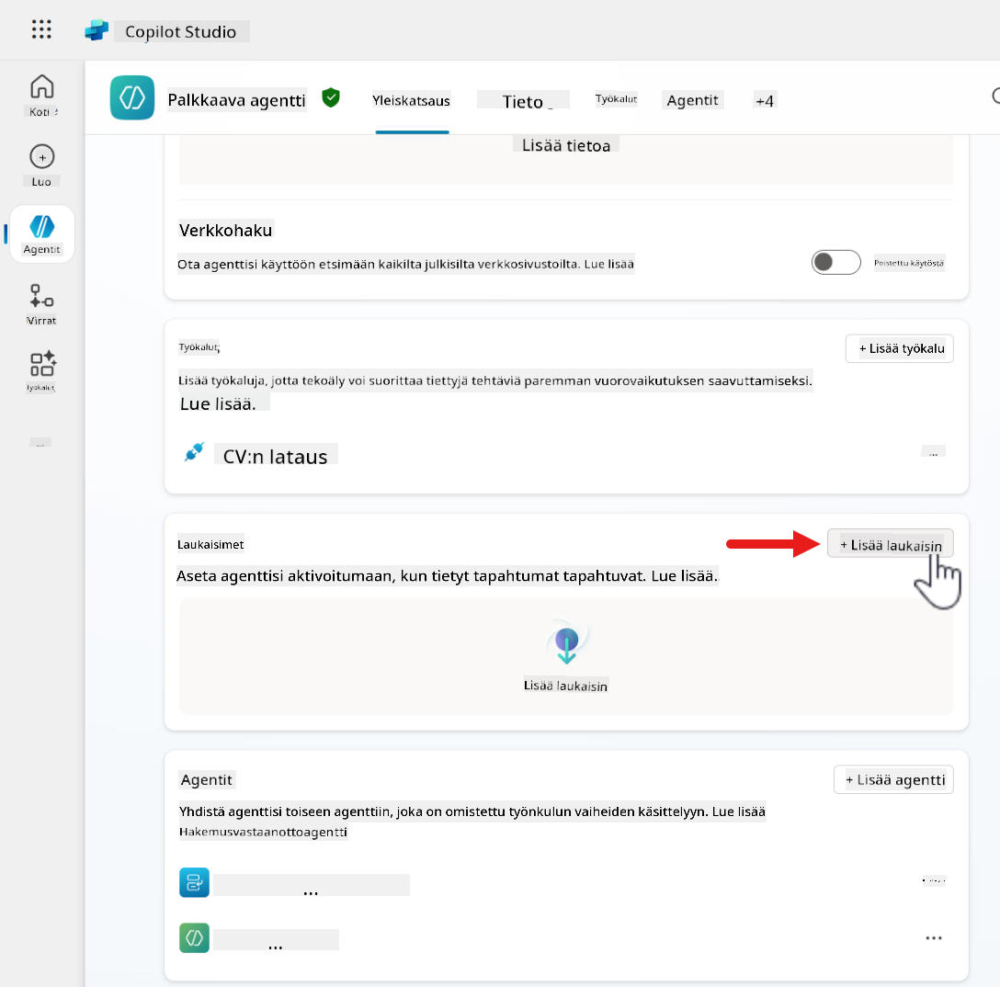
-
Lista triggereistä ilmestyy. Valitse When a new email arrives (V3) ja valitse Next.
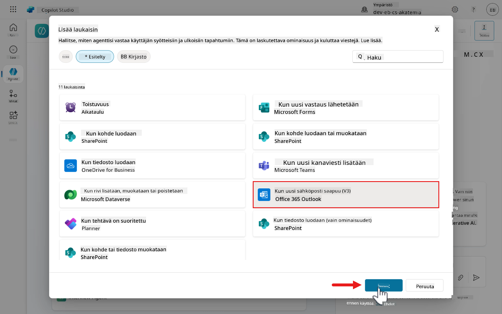
-
Näet nyt Trigger name ja Sign in -yhteysviittaukset listatuista sovelluksista.
Nimeä triggeri seuraavasti,
Varmista, että näet vihreän tarkistusmerkin jokaisen listatun sovelluksen yhteysviittauksen kohdalla. Jos et näe vihreää tarkistusmerkkiä, kirjaudu sisään ellipsin (...) kautta ja valitse + New connection reference luodaksesi uuden yhteysviittauksen.
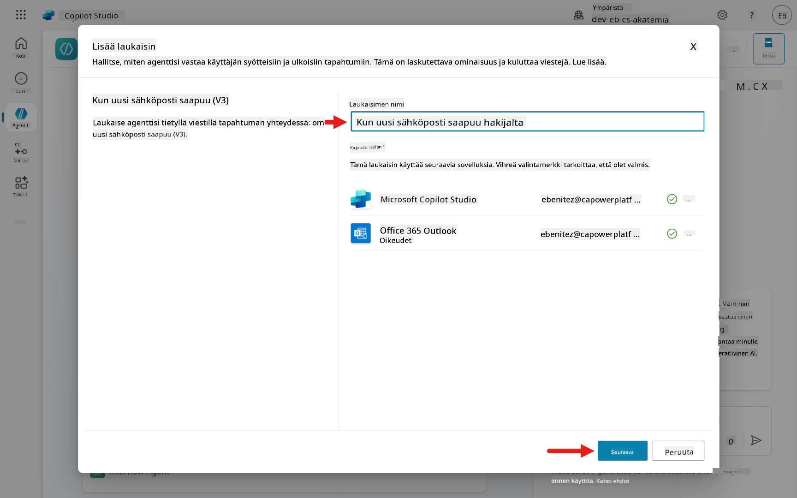
-
Viimeinen vaihe on asettaa triggerin syöttöominaisuudet. Päivitä seuraavat ominaisuudet seuraavasti,
Ominaisuus Miten asetetaan Tiedot Include Attachments (Optional) Pudotusvalikko Kyllä Subject Filter (Optional) Kirjoita/näppäile näppäimistöllä Application Only with Attachments (Optional) Pudotusvalikko K Nyt päivitetään tapahtuman laukaisija lisäämään automaatiomahdollisuuksia. Valitse laukaisijan kolmipistevalikko (...) ja valitse Muokkaa Power Automatessa.
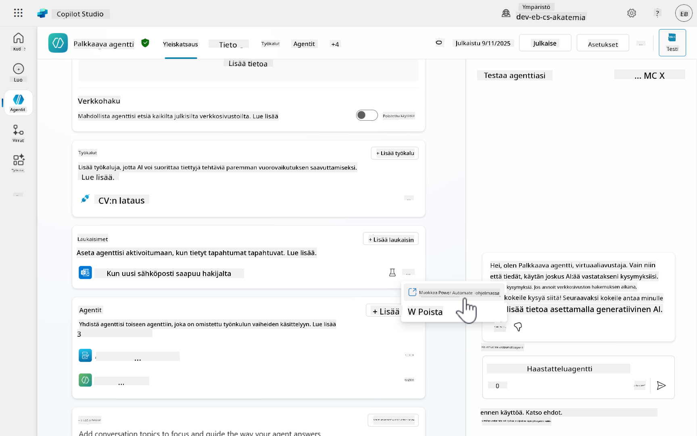
- Laukaisija latautuu Power Automate -portaalin virtausmuokkaimeen. Näet virtausmuokkaimen Power Automate -portaalissa. Täällä voimme lisätä lisää logiikkaa ja toimintoja automaation tehostamiseksi. Laukaisija näkyy ylhäällä, ja viimeisenä toimintona on Lähettää kehotteen määritetylle copilotille käsittelyä varten.
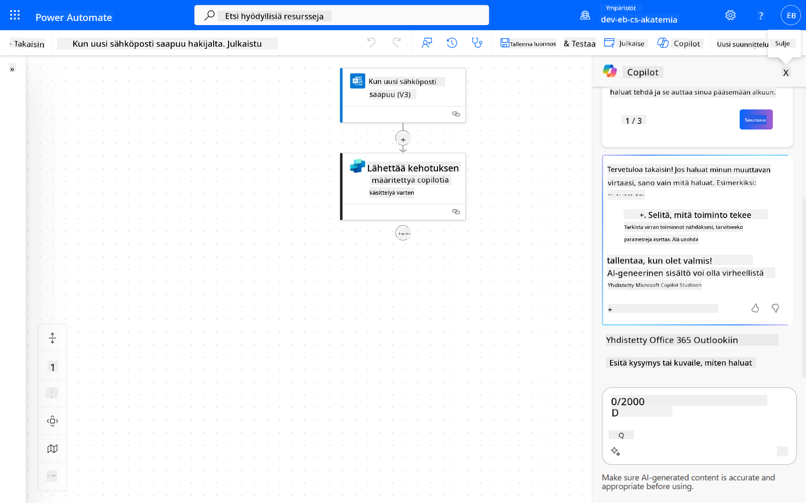
- Oletuksena Power Automaten Kun uusi sähköposti saapuu -laukaisija voi käsitellä useita sähköposteja yhdessä, jos niitä saapuu useita kerralla, suorittaen virtauksen vain kerran erälle.
Jotta virtaus suoritetaan erikseen jokaiselle sähköpostille, ota käyttöön Split On -asetus laukaisijan asetuksissa ja valitse @triggerOutputs()?['body/value'] pudotusvalikon kentästä.
Kun Split On on käytössä ja kenttä asetettu @triggerOutputs()?['body/value'], virtaus suoritetaan yksittäin jokaiselle viestille, vaikka niitä saapuisi useita samanaikaisesti.
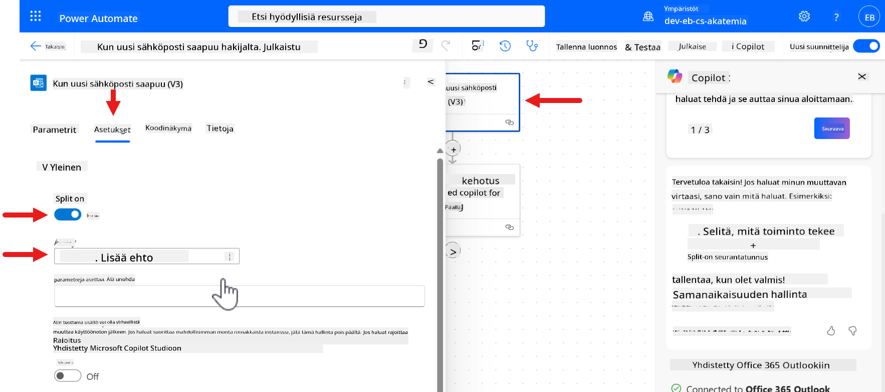
- Lisätään seuraavaksi logiikkaa tarkistamaan liitteen tiedostotyyppi. Haluamme ladata vain .PDF-tiedostoliitteet, ei kuvia (nämä voivat olla sähköpostin allekirjoituksista). Valitse laukaisijan alapuolella +-kuvake ja valitse Control kohdasta Sisäänrakennetut työkalut.
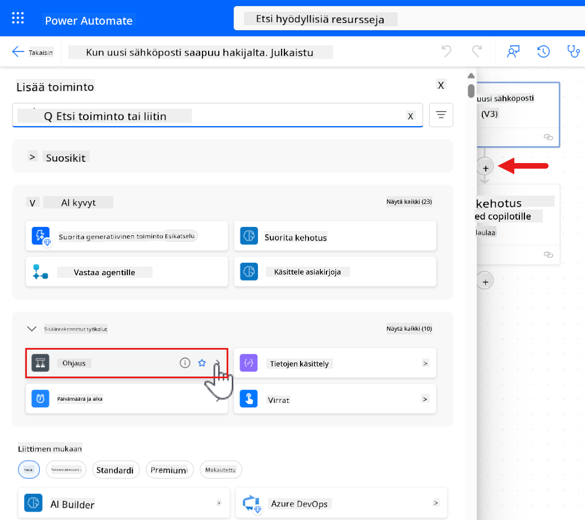
- Valitse Ehto-toiminto.
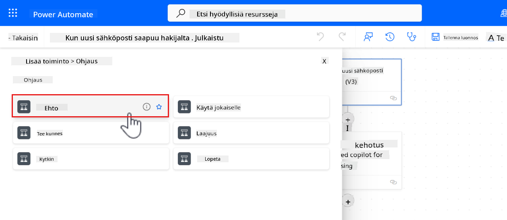
-
Konfiguroidaan ehto tarkistamaan, onko liitteen tiedostotyyppi .PDF. Valitse arvo -kentässä valitse oikealla oleva salaman kuva tai fx-kuvake.
-
Haku-kenttään kirjoita seuraava:
-
Valitse sitten laukaisijan Attachments Content-Type -parametri.
-
Valitse Lisää lisätäksesi dynaamisen sisällön syötteen toiminnon Id-parametriin.
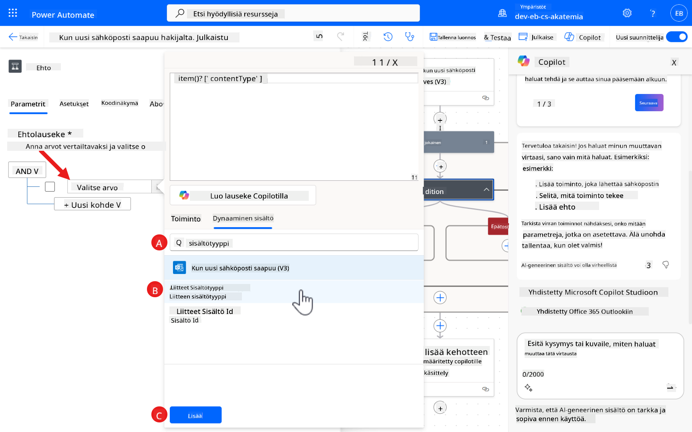
- Pysähdytään hetkeksi, olet ehkä huomannut, että For each-toiminto ilmestyi automaattisesti.
Valitse For each-toiminto. Tämä toiminto edustaa silmukointia jokaisen sähköpostin liitteen läpi, koska laukaisijan Attachments Content-Type -parametri liittyy jokaiseen liitteeseen.
Taustalla se on taulukko, ja siksi For each-toiminto lisättiin automaattisesti, kun valitsimme Attachments Content-Type -parametrin Ehto-toiminnossa.
Lisätietoja tästä saat laajentamalla seuraavan oppimisosion.
Lisäoppiminen: For each -toiminto ilmestyy automaattisesti
🤔 Miksi "Apply to each" tai "For each" ilmestyy automaattisesti?
Kun valitset parametrin (dynaaminen sisältö), joka edustaa listaa tai taulukkoa - esimerkiksi liitteiden, sähköpostien tai rivien lista - Power Automate tunnistaa, että haluat ehkä käsitellä jokaista kohdetta erikseen.
Power Automate lisää automaattisesti "Apply to each" (tai For each) -silmukan toiminnon ympärille. Tämä varmistaa, että toiminto suoritetaan kerran jokaista listan kohdetta varten, sen sijaan että yritettäisiin käsitellä koko lista kerralla (mikä voisi aiheuttaa virheitä).
🦋 Esimerkki
- Jos valitset "Attachments" edellisestä toiminnosta (joka on taulukko) ja yrität käyttää sitä toiminnossa, joka odottaa yksittäistä tiedostoa, Power Automate ympäröi toimintosi "Apply to each" (tai For each) -silmukalla.
- Näin toimintosi suoritetaan jokaiselle liitteelle - yksi kerrallaan.
💡 Keskeiset kohdat
- Automaattinen: Silmukka ilmestyy automaattisesti auttamaan sinua käsittelemään jokaista kohdetta kokoelmassa.
- Estää virheet: Ilman silmukkaa toimintosi saattaa epäonnistua, koska se ei voi käsitellä useita kohteita kerralla.
- Visuaalinen vihje: Se näyttää visuaalisesti, että virtauksesi toistaa toiminnon jokaiselle listan kohteelle.
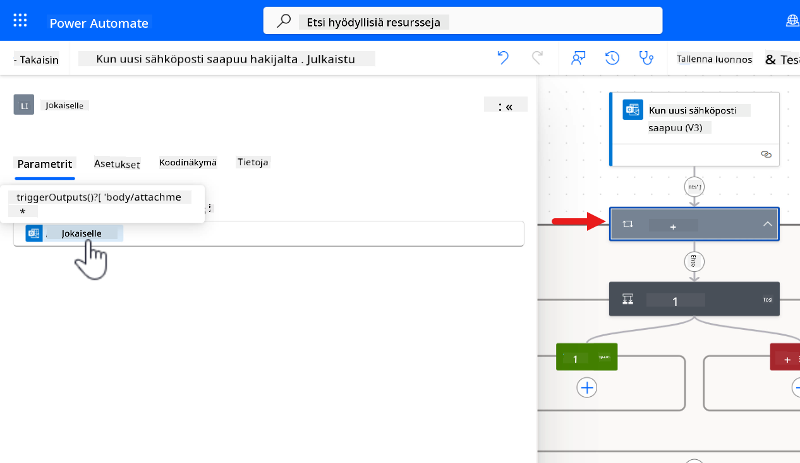
- Seuraavaksi, toisessa Valitse arvo -kentässä, kirjoita seuraava:
Tämä varmistaa, että jokaisen tiedostoliitteen kohdalla tarkistetaan, että tiedostomuoto on .PDF.
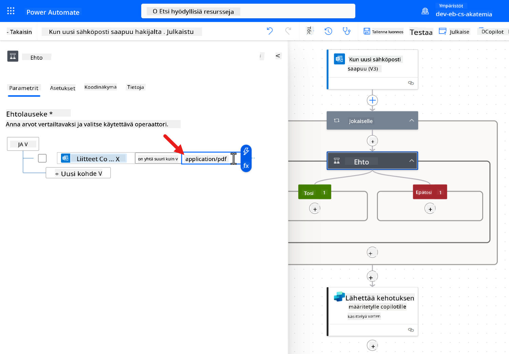
- Konfiguroidaan True-polku, jotta tiedosto voidaan poimia sähköpostista ja ladata Resume Dataverse-taulukkoon.
Lisää uusi toiminto True-polun alle ja etsi html to text. Valitse Html to text-toiminto.
Lisätietoja Html to text-toiminnosta saat laajentamalla seuraavan oppimisosion.
Lisäoppiminen: Html to text -toiminto
🤔 Mikä on "HTML to text" -toiminto?
HTML to text-toiminto Power Automatessa muuntaa HTML-muotoisen sisällön tavalliseksi tekstiksi. Tämä on erityisen hyödyllistä, kun vastaanotat dataa (kuten sähköposteja, verkkosisältöä tai API-vastauksia), jotka sisältävät HTML-tageja, ja haluat poimia vain luettavan tekstin ilman muotoiluja tai koodia.
⚙️ Miten se toimii?
- Syöte: Syötät HTML-sisältöä (esimerkiksi sähköpostin runko).
- Tulos: Toiminto poistaa kaikki HTML-tagit ja palauttaa vain tavallisen tekstin.
👍🏻 Milloin sitä kannattaa käyttää?
- Kun haluat poimia luettavaa tekstiä sähköposteista, verkkosivuilta tai API-vastauksista, jotka sisältävät HTML:ää.
- Ennen sisällön lähettämistä järjestelmiin, jotka eivät tue HTML-muotoilua (kuten tekstiviestit, Teams-viestit tai tietokannat).
- Datan puhdistamiseen ja sisällön valmisteluun jatkokäsittelyä tai analyysiä varten.
🔭 Mistä sen löytää?
- Power Automatessa Agent Flows -osiossa, etsi toiminto nimeltä
HTML to text. Se löytyy Data Operations-liittimestä.
💡 Keskeiset kohdat
- Poistaa kaikki HTML-tagit ja jättää vain tekstin.
- Ei tulkitse tai suorita skriptejä/tyylejä - vain poistaa tagit.
- Hyödyllinen datan puhdistamiseen ja sisällön valmisteluun tavallisen tekstin ulostuloja varten.
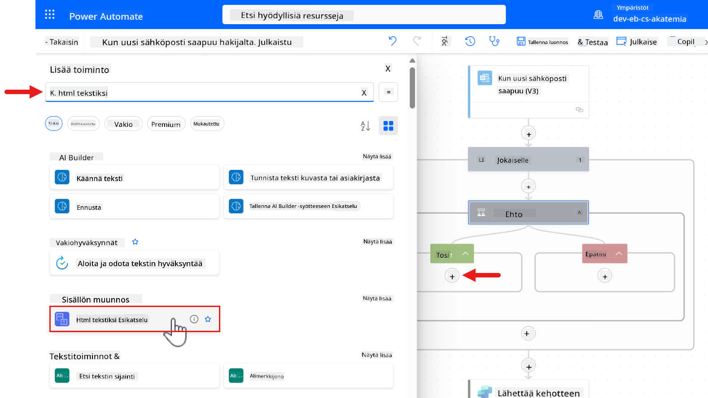
- Seuraavaksi meidän täytyy luoda uusi yhteysviite Html to text-toiminnolle valitsemalla Lisää uusi.
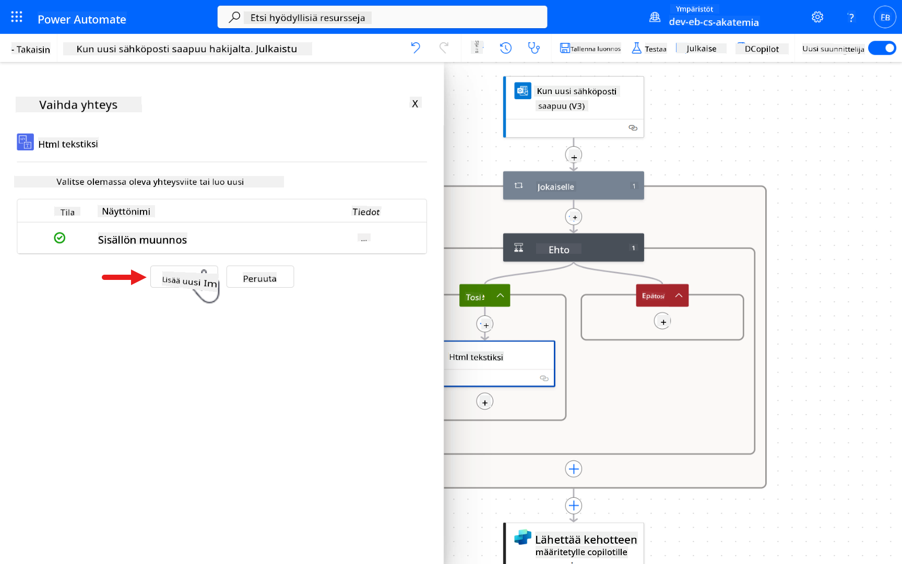
- Toiminto voidaan nyt konfiguroida. Lisätään laukaisijan Body-parametri. Sisältö-kentässä valitse oikealla oleva salaman kuva tai fx-kuvake.
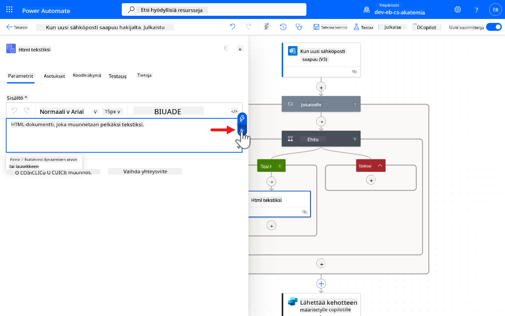
- Dynaaminen sisältö-välilehdessä etsi
bodyja valitse laukaisijan Body-parametri, ja valitse sitten Lisää.
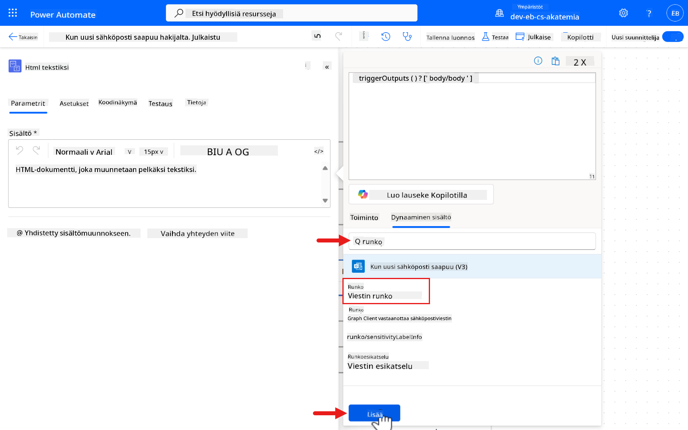
- Olemme nyt valmiita konfiguroimaan tämän toiminnon, joten poistutaan toiminnosta valitsemalla vasemmalle osoittavat kaksoisnuolet («) paneelin pienentämiseksi.
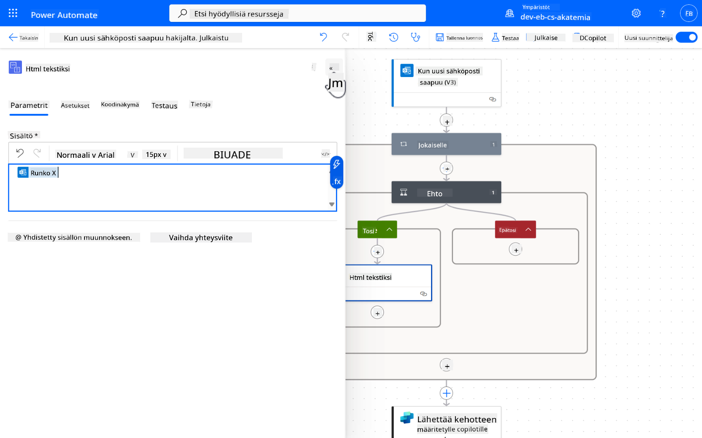
- Lisätään uusi toiminto valitsemalla +-kuvake Html to text-toiminnon alapuolella, mikä avaa paneelin toimintojen lisäämistä varten. Valitse Microsoft Dataverse-liitin.
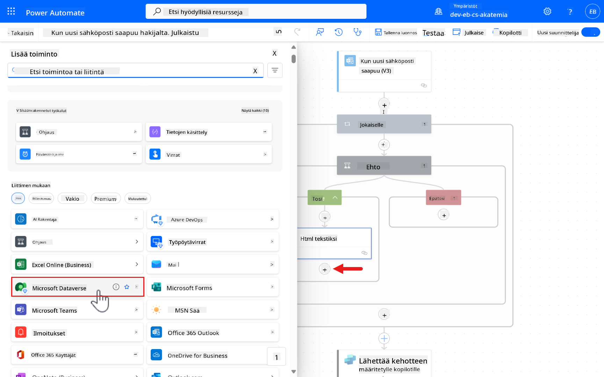
- Valitse Lisää uusi rivi-toiminto.
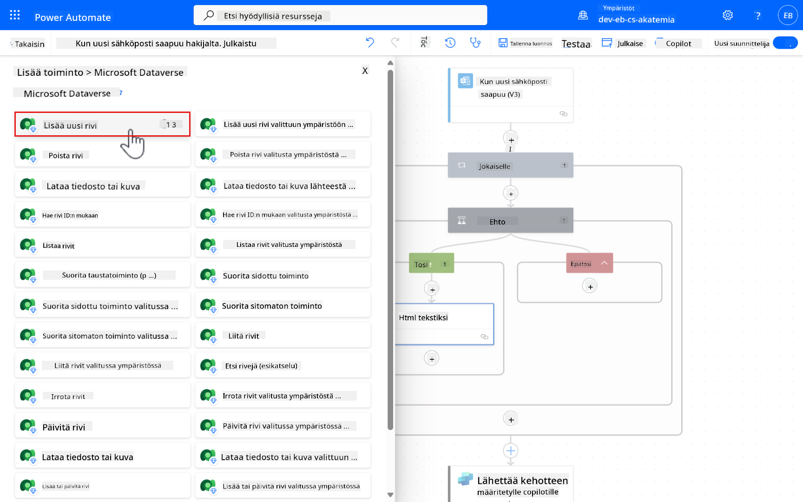
- Nimeä toiminto valitsemalla Kolmipistevalikko (...), kopioi ja liitä seuraava nimi:
Taulukon nimi-parametrissa etsi res ja valitse Resumes-taulukko.
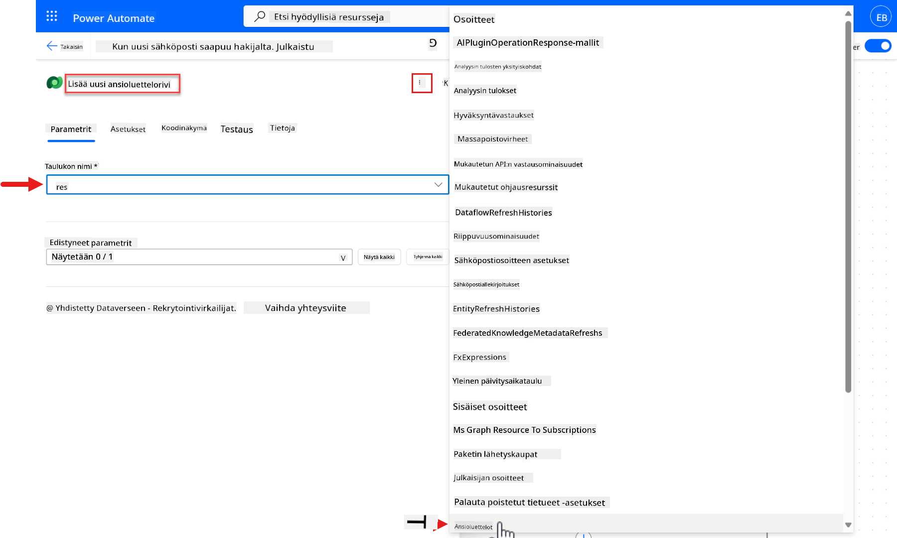
- Valitse seuraavaksi Resume Title-kenttä ja valitse oikealla oleva salaman kuva tai fx-kuvake.
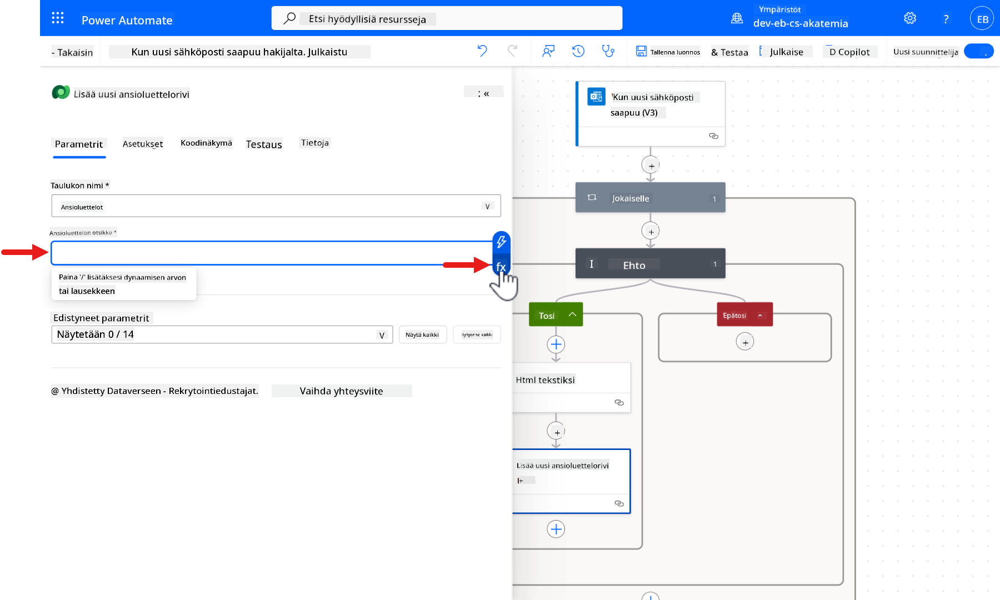
- Funktiot-välilehdessä syötä seuraava lauseke, joka käyttää
item()-funktiota:
Lisätietoja item()-funktiosta saat laajentamalla seuraavan oppimisosion.
Lisäoppiminen: item()-funktio
🤔 Mikä on item()-funktio?
- Kun käytät Apply to each-toimintoa, Power Automate käy läpi jokaisen elementin kokoelmassa (taulukossa).
- Sitä käytetään yleisimmin toiminnon kuten Apply to each (tai For each), Select tai Filter array sisällä.
⚙️ Miten se toimii?
item()on funktio, joka palauttaa silmukassa tai taulukko-operaatiossa käsiteltävän nykyisen kohteen.- Silmukan sisällä
item()viittaa käsiteltävään elementtiin.
📌 Missä sitä käytetään?
- Apply to each: pääsy nykyisen kohteen ominaisuuksiin.
- Select: taulukon jokaisen kohteen muuntamiseen.
- Filter array: viittaus nykyiseen arvioitavaan kohteeseen.
🦋 Esimerkki
- Lauseke silmukan sisällä:
item()?['Email']
- Tämä hakee nykyisen kohteen
Email-ominaisuuden.
💡 Keskeiset kohdat
item()on kontekstisidonnainen: se viittaa aina silmukassa tai taulukko-operaatiossa käsiteltävään kohteeseen.- Jos silmukoita on sisäkkäin, voit käyttää
items('LoopName')viitataksesi tietyn silmukan kohteisiin.
Valitse Lisää lisätäksesi lausekkeen Resume Title-parametriin.
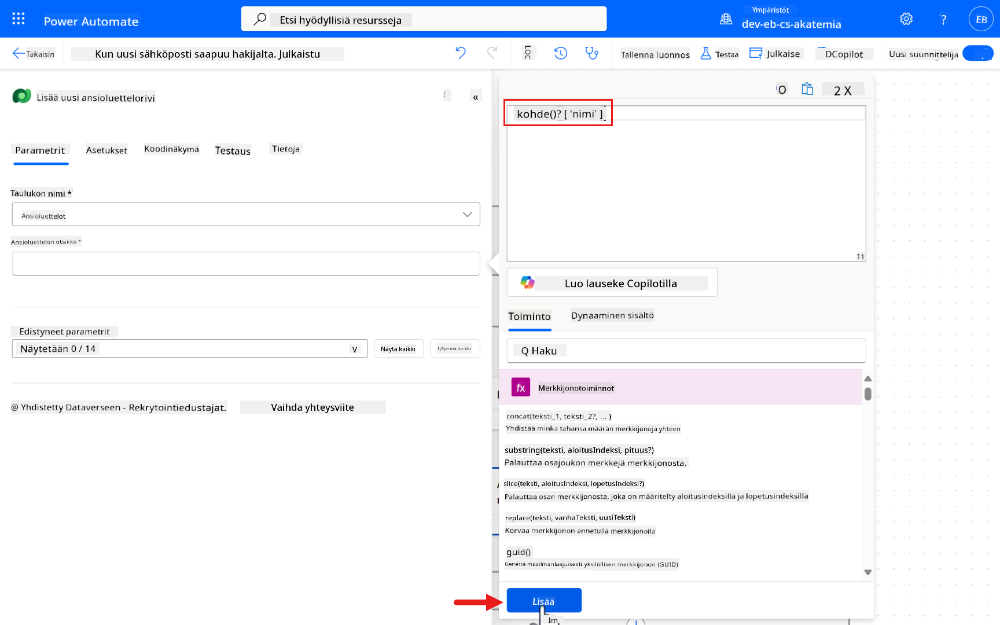
- Meidän täytyy vielä konfiguroida useita parametreja. Valitse Näytä kaikki ja Cover Letter-kentässä valitse oikealla oleva salaman kuva tai fx-kuvake.
Funktiot-välilehdessä syötä seuraava lauseke, joka käyttää samaa lauseketta edellisessä tehtävässä.
if(greater(length(body('Html_to_text')), 2000), substring(body('Html_to_text'), 0, 2000), body('Html_to_text'))
Tämä lauseke tarkistaa, onko Html to text-toiminnosta saatu teksti pidempi kuin 2000 merkkiä, ja jos on, palauttaa vain ensimmäiset 2000 merkkiä; muuten se palauttaa koko tekstin.
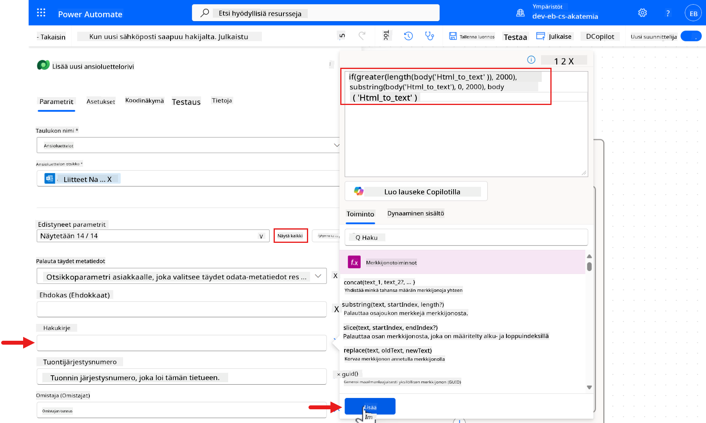
- Lauseke lisätään nyt Cover Letter-kenttään.
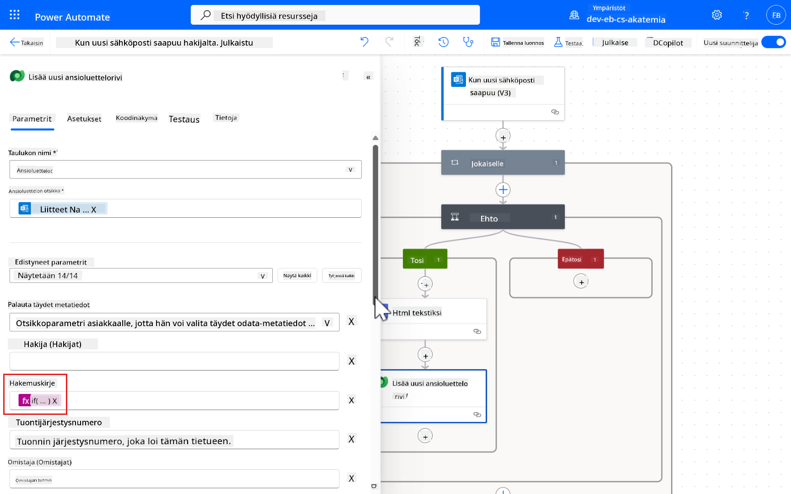
- Source Email Address-kenttään etsi
fromja valitse laukaisijan From-parametri, koska tämä sisältää sähköpostiosoitteen arvon.
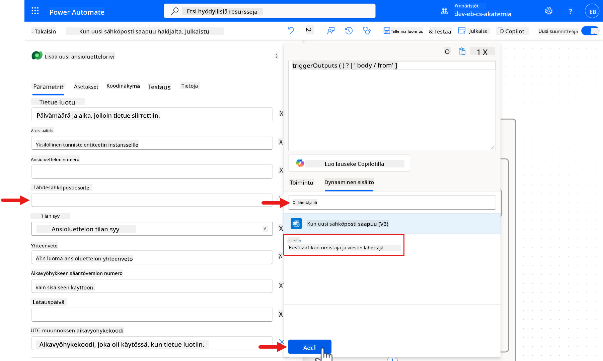
- Upload Date-kentässä valitse oikealla oleva salaman kuva tai fx-kuvake. Funktiot-välilehdessä syötä seuraava lauseke, joka käyttää
utcNow()-funktiota.
Lisätietoja utcNow-funktiosta saat laajentamalla seuraavan oppimisosion.
Lisäoppiminen: utcNow-funktio
🤔 Mikä on utcNow()-funktio?
utcNow()-funktio Power Automatessa palauttaa nykyisen päivämäärän ja ajan koordinoidussa yleisajassa (UTC) ISO 8601 -muodossa, kuten:2025-09-23T04:32:14Z
🦋 Esimerkki
- Lauseke:
concat('Raportti luotu ', utcNow())
- Tulos on:
- Raportti luotu
2025-09-23T04:32:14Z
- Raportti luotu
💡 Keskeiset kohdat - Ei vaadi argumentteja (syöttöparametreja): antaa aina nykyisen UTC-aikaleiman. - Käyttötapaukset - Aikaleimojen lisääminen lokitiedostoihin tai tiedostonimiin - Nykyisen ajan vertailu muihin päivämääriin - Ajastaminen tai aikaperusteiset ehdot
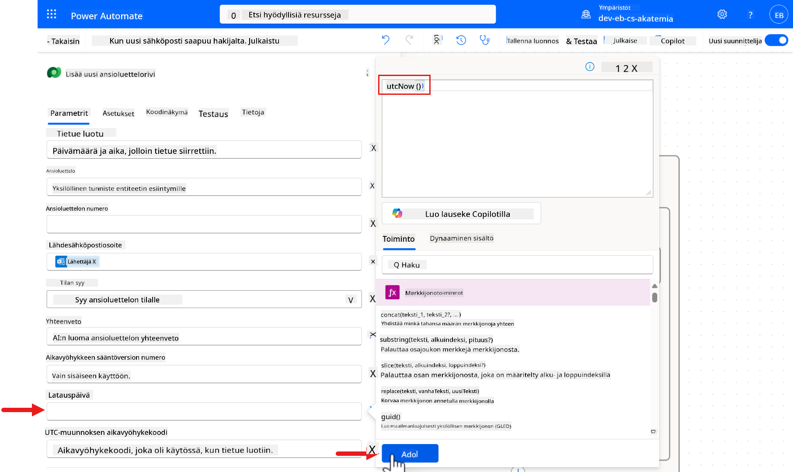
- Olemme nyt saaneet valmiiksi Lisää uusi ansioluettelorivi -toiminnon määrittämisen, joten suljetaan paneeli pienentämällä se.
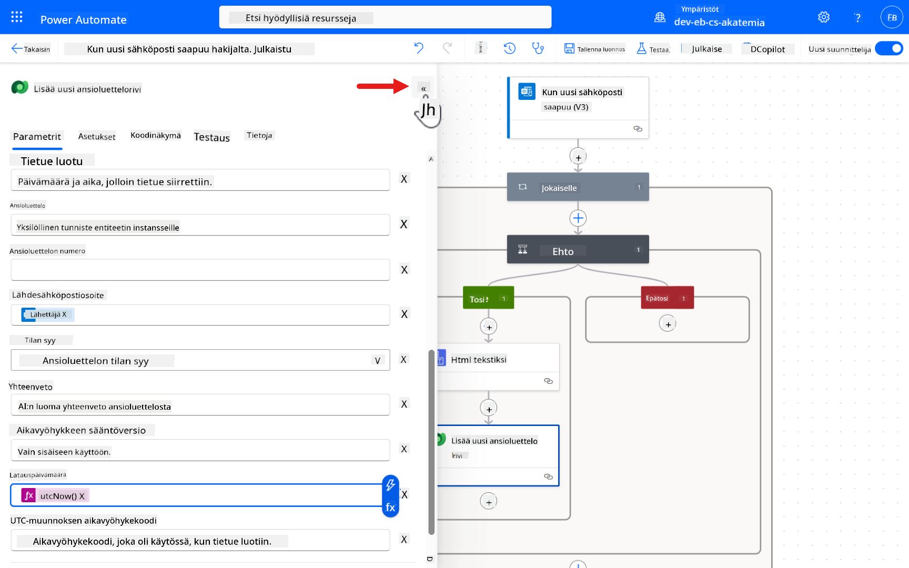
- Lisätään uusi toiminto valitsemalla + -kuvake Lisää uusi ansioluettelorivi -toiminnon alapuolelta, mikä avaa paneelin toimintojen lisäämistä varten. Valitse uudelleen Microsoft Dataverse -liitin.
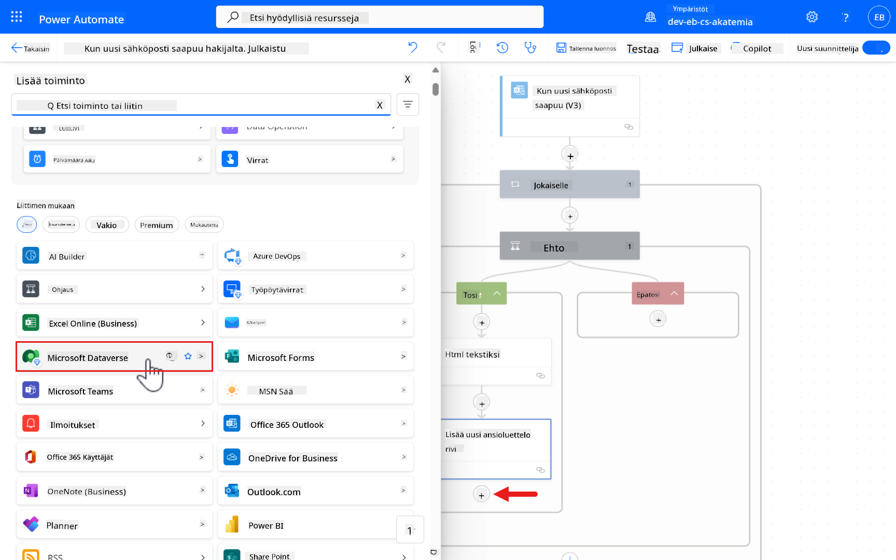
- Valitse Lataa tiedosto tai kuva -toiminto.
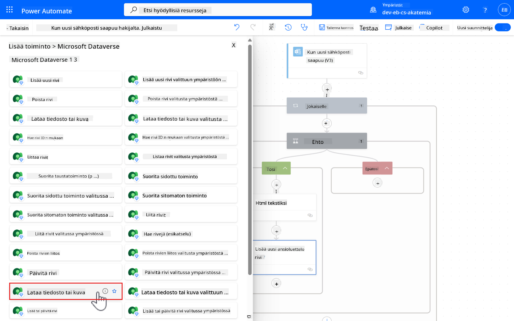
- Nimeä toiminto uudelleen valitsemalla Kolme pistettä (...), kopioi ja liitä seuraava nimi:
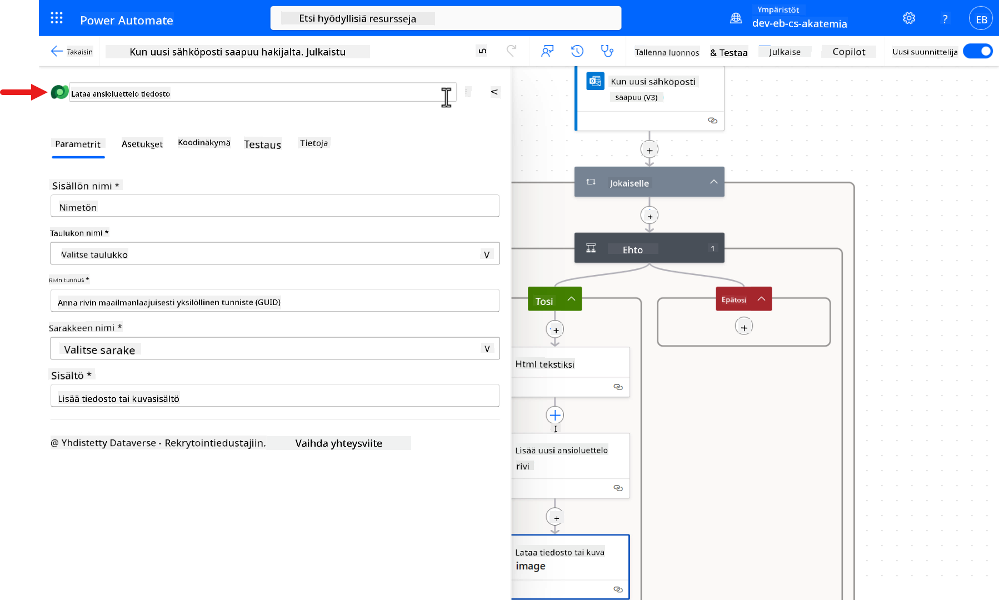
- Valitse seuraavaksi Sisällön nimi -kenttä ja valitse oikealla puolella oleva salaman kuvake tai fx-kuvake.
Funktio-välilehdellä syötä seuraava lauseke, joka käyttää item () -funktiota. Tämä hakee nykyisen kohteen (liitetiedoston) name-ominaisuuden.
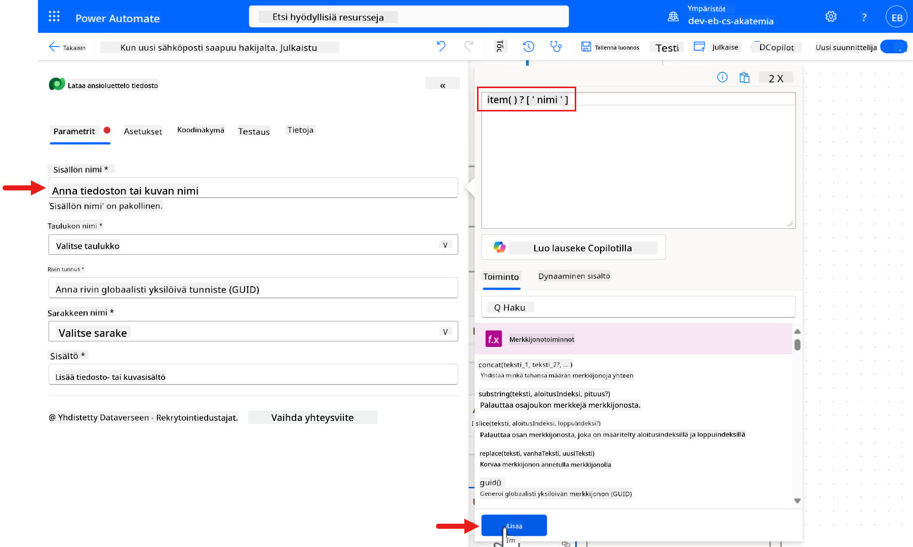
- Taulukon nimi -parametrille etsi
resja valitse Ansioluettelot-taulukko.
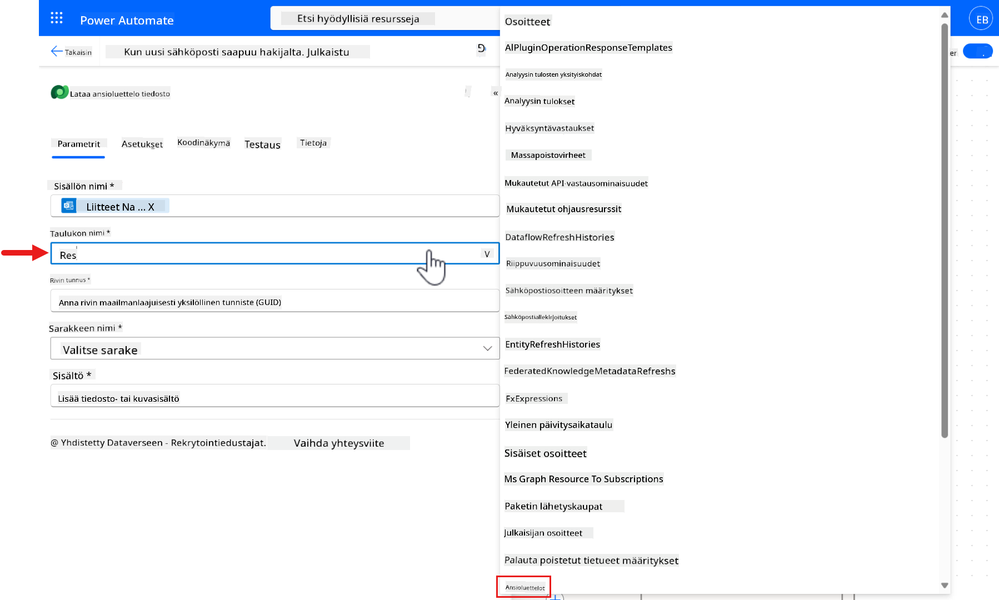
- Valitse seuraavaksi Rivin tunnus -kenttä ja valitse oikealla puolella oleva salaman kuvake tai fx-kuvake.
Etsi ID ja valitse Ansioluettelo-parametri Lisää uusi rivi Dataverse-toiminnosta, koska tämä sisältää rivin tunnusarvon, johon PDF-tiedosto ladataan.
Valitse Lisää.
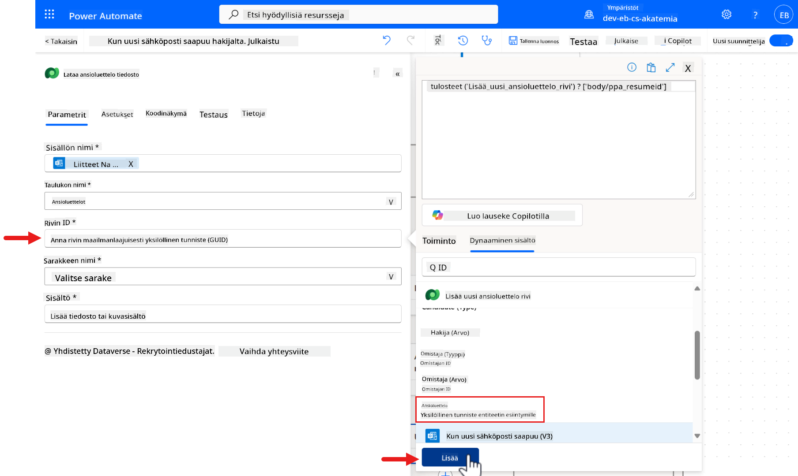
- Valitse Sarakkeen nimi -kenttä ja valitse Ansioluettelo PDF -vaihtoehto.
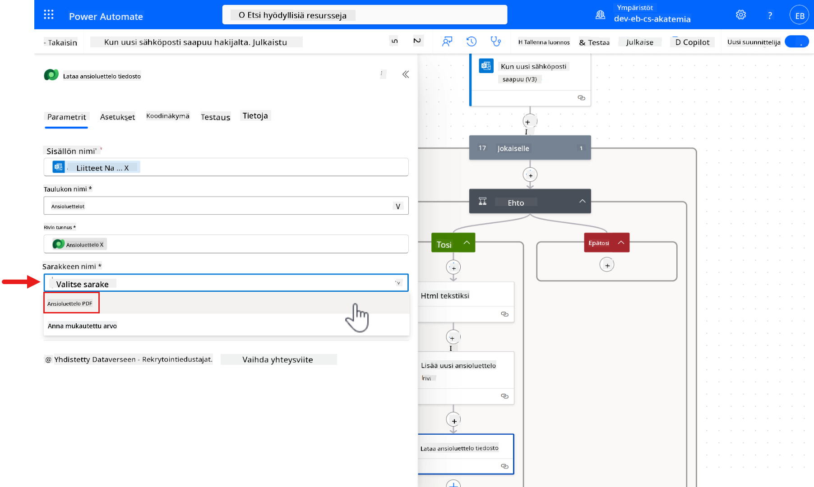
- Valitse Sisältö-kenttä ja valitse oikealla puolella oleva salaman kuvake tai fx-kuvake.
Funktio-välilehdellä syötä seuraava lauseke, joka käyttää item () -funktiota. Tämä hakee nykyisen kohteen (liitetiedoston) contentBytes-ominaisuuden. contentBytes viittaa tiedoston tai liitteen raakaan binääridataan, joka on koodattu Base64-merkkijonoksi.
- Olemme saaneet tämän toiminnon määrittämisen valmiiksi, joten suljetaan toiminto valitsemalla vasemmalle osoittavat kaksoisnuolet («) paneelin pienentämiseksi.
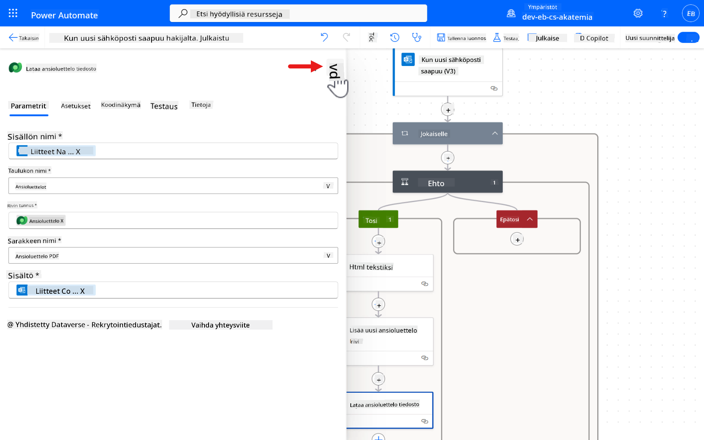
- Valitse seuraavaksi Lähettää kehotteen määritetylle copilotille käsittelyä varten, ja vedä ja pudota tämä toiminto Lataa ansioluettelo-tiedosto -toiminnon alapuolelle ehdon True-polussa.
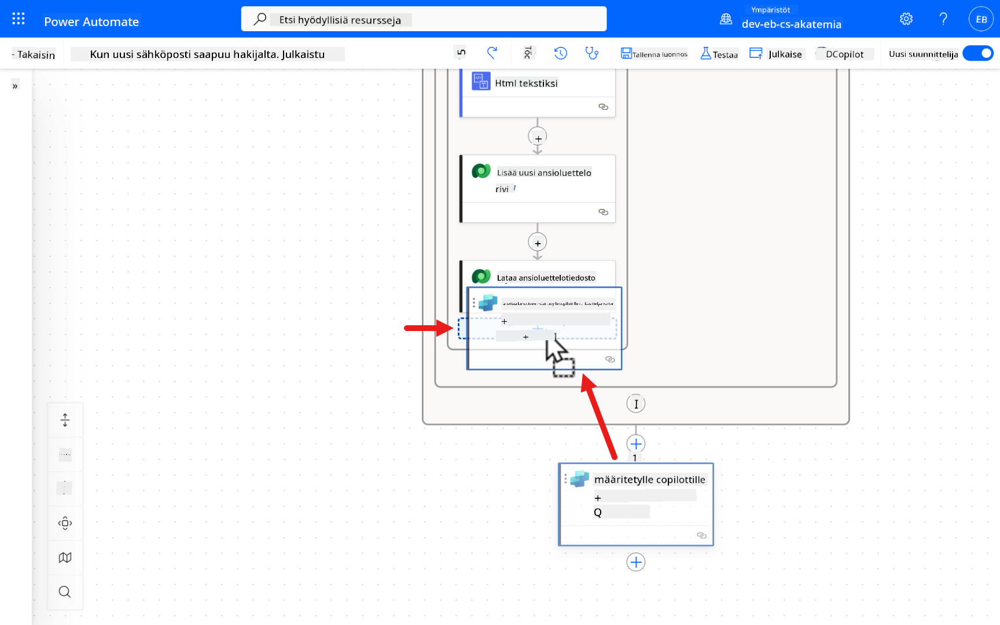
- Valitse Lähettää kehotteen määritetylle copilotille käsittelyä varten -toiminto sen määrittämiseksi.
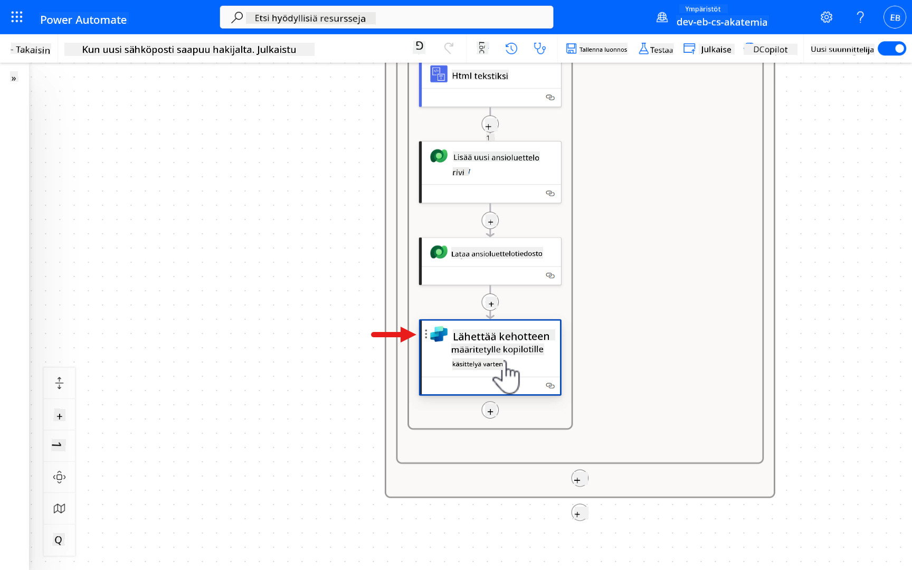
- Runko/viesti-kentässä valitse kaikki kentän sisältö ja tyhjennä/poista se.
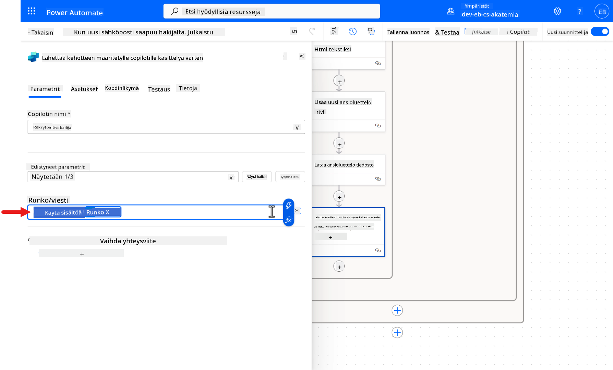
- Kopioi ja liitä seuraava teksti Runko/viesti-kenttään ja korosta
RESUME ID PLACEHOLDER.
Lähetä [ResumeId (text)] = "RESUME ID PLACEHOLDER" ja [ResumeTitle (text_1)] = "RESUME TITLE PLACEHOLDER" ja [ResumeNumber (text_2)]= "RESUME NUMBER PLACEHOLDER" Työkaluun "Ilmoita Teamsin hakijakanavalle" lapsiagentissa "Hakemusten vastaanottoagentti"
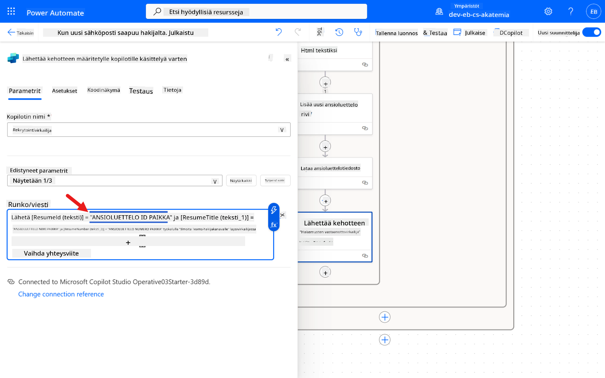
- Valitse oikealla puolella oleva salaman kuvake tai fx-kuvake.
Etsi resume ja valitse Ansioluettelo-parametri Lisää uusi rivi Dataverse-toiminnosta, koska tämä sisältää luodun ansioluettelorivin ID-arvon.
Valitse Lisää.
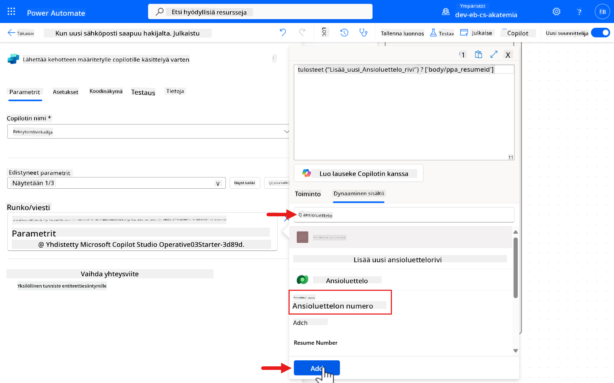
- Korosta
RESUME TITLE PLACEHOLDER. Valitse oikealla puolella oleva salaman kuvake tai fx-kuvake.
Etsi title ja valitse Ansioluettelon otsikko -parametri Lisää uusi rivi Dataverse-toiminnosta, koska tämä sisältää luodun ansioluettelorivin otsikko-arvon.
Valitse Lisää.
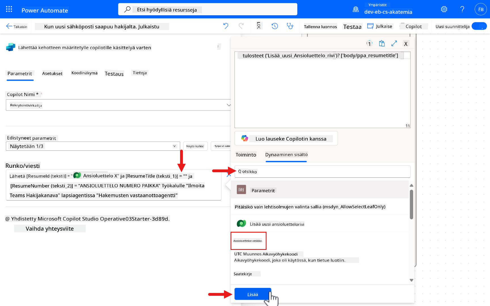
- Korosta
RESUME NUMBER PLACEHOLDER. Valitse oikealla puolella oleva salaman kuvake tai fx-kuvake.
Etsi resume number ja valitse Ansioluettelon numero -parametri Lisää uusi rivi Dataverse-toiminnosta, koska tämä sisältää luodun ansioluettelorivin numero-arvon.
Valitse Lisää.
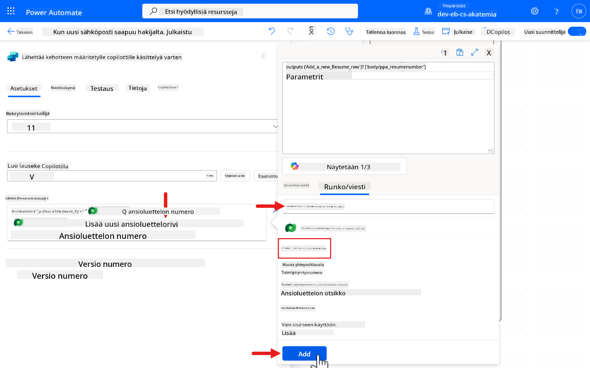
- Olemme saaneet tämän toiminnon määrittämisen valmiiksi ja agenttivirtaus on valmis 🙌🏻 Hyvin tehty! Nyt tallennetaan tapahtumatrigger-virtaus valitsemalla Tallenna luonnos.
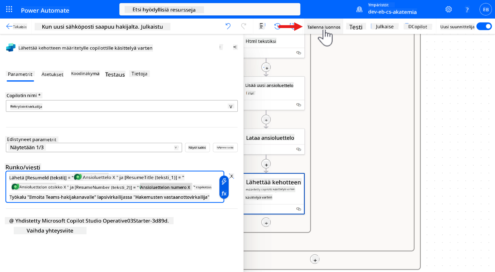
- Nyt meidän täytyy muokata agenttivirtauksen yksityiskohtia, valitse Takaisin.
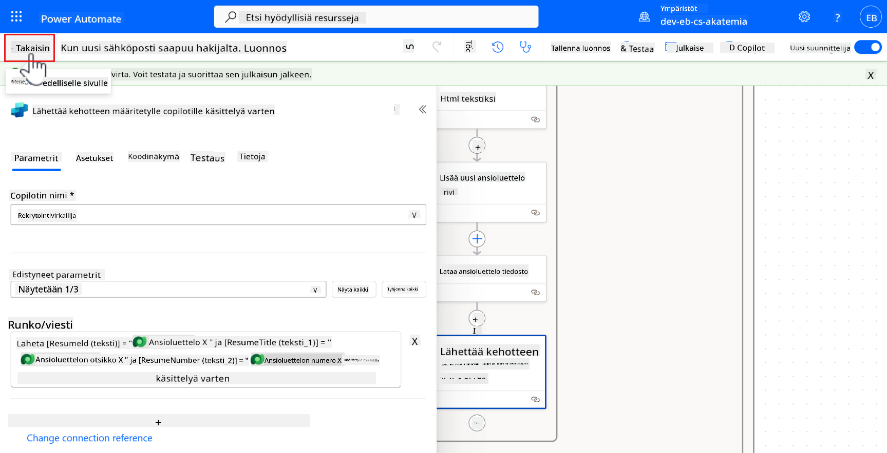
- Valitse Muokkaa Yksityiskohdat-osiossa ja päivitä Suunnitelma Copilot Studio -vaihtoehtoon.
Valitse Tallenna.
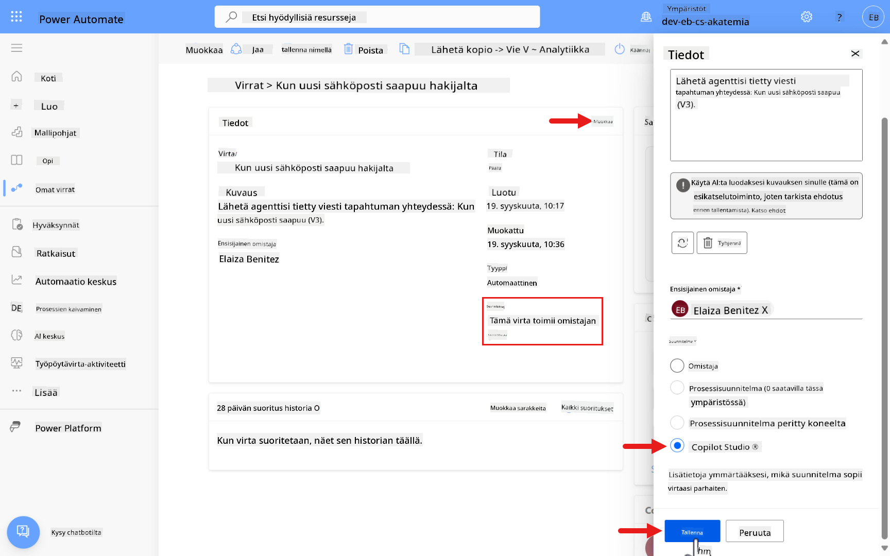
- Näyttöön tulee modal, joka pyytää vahvistamaan siirtymisen Copilot Studio -suunnitelmaan. Valitse Vahvista.
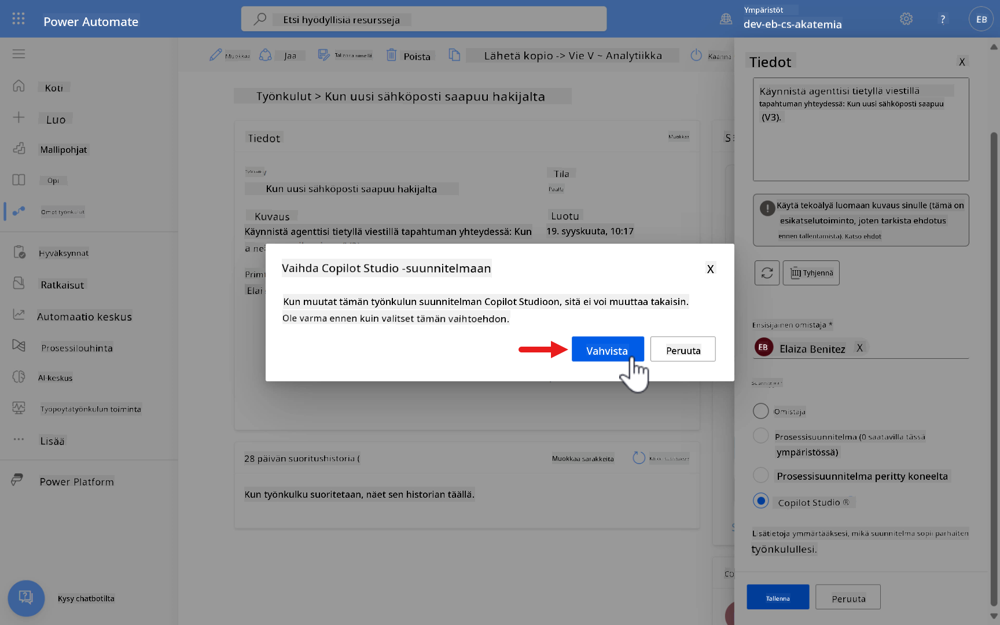
- Suunnitelma on nyt päivitetty Copilot Studio -suunnitelmaan. Valitse Muokkaa, koska meidän täytyy julkaista tapahtumatrigger-virtaus agentillemme.
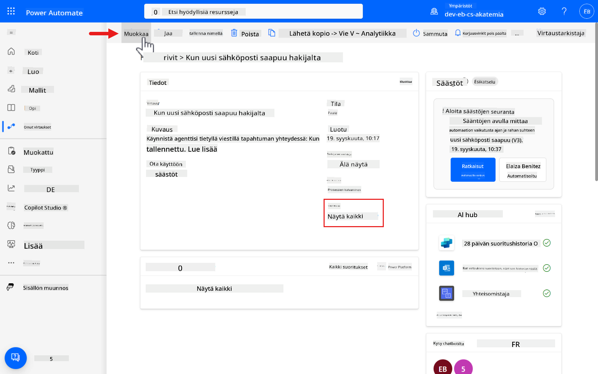
- Valitse Julkaise.
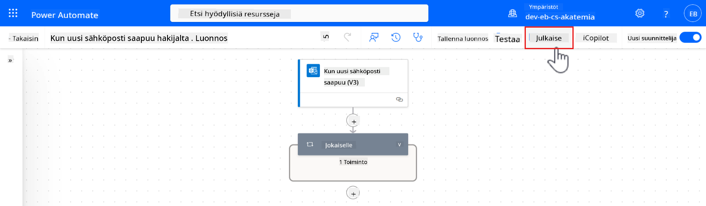
Hurraa! Tapahtumatrigger-virtaus on nyt julkaistu 😃
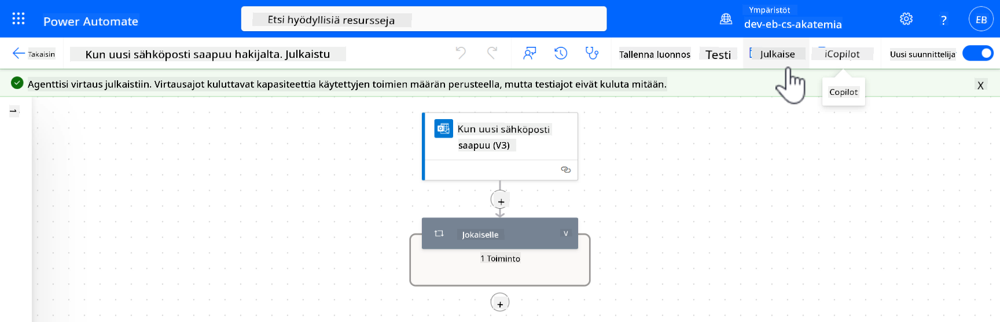
Jatketaan uuden agenttivirtauksen luomisella, jonka lapsiagentti Hakemusten vastaanottoagentti käynnistää.
Lab 3.2 - Ilmoita Teams-kanavalle mukautetulla kortilla¶
Nyt luomme uuden agenttivirtauksen lapsiagentille Hakemusten vastaanottoagentti, joka käyttää tapahtumatriggerin välittämiä arvoja lähettääkseen mukautetun kortin Teams-kanavalle. Tämä mukautettu kortti ilmoittaa HR-rekrytointitiimille automaattisesti ladatusta PDF-tiedostosta, jotta he voivat tarkistaa sen.
Aloitetaan!
- Valitse Rekrytointiautomaatti-agentissa Agentit-välilehti ja valitse Hakemusten vastaanottoagentti.
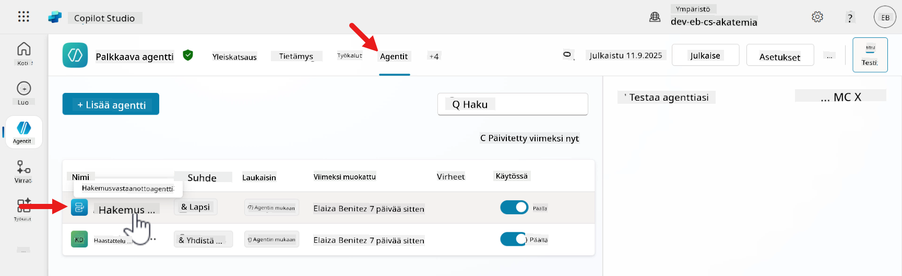
- Vieritä alas kohtaan Työkalut ja valitse + Lisää.
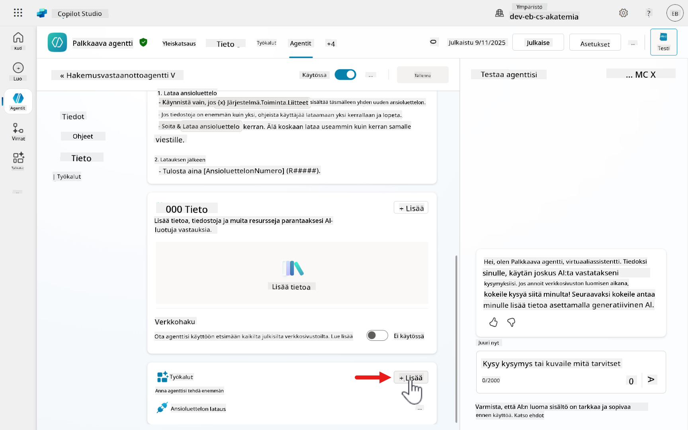
- Näyttöön tulee Lisää työkalu -modal. Valitse + Uusi työkalu.
- Valitse Agenttivirtaus.
- Seuraavaksi latautuu agenttivirtauksen suunnittelija. Kun agentti kutsuu virtauksen -triggerissä valitse + Lisää syöte.
- Valitse Teksti käyttäjän syötteen tyypiksi.
- Syötteen tekstikenttään kopioi ja liitä seuraava syöttöparametrin nimi.
- Toista samat vaiheet lisätäksesi toisen tekstisyötteen. Kopioi ja liitä seuraava syöttöparametrin nimi.
- Toista samat vaiheet lisätäksesi kolmannen tekstisyötteen. Kopioi ja liitä seuraava syöttöparametrin nimi.
- Muistatko, kuinka Rekrytointi -osiossa lisäsimme mukautetun kortin agentin aiheeseen? Tällä kertaa aiomme lisätä mukautetun kortin agenttivirtaukseen. Nyt lisäämme toisen toiminnon agenttivirtaukseen, joka lähettää mukautetun kortin Teams-kanavalle.
Valitse triggerin alapuolelta + -kuvake.
- Valitse Lähetä kortti keskusteluun tai kanavalle -toiminto.
- Microsoft Teams -yhteysviite täytyy luoda kirjautuneella käyttäjätililläsi. Valitse Kirjaudu sisään.
- Valitse käyttäjätilisi ja valitse Salli pääsy.
- Seuraaville syöttöparametreille:
| Parametri | Miten asetetaan | Tiedot |
|---|---|---|
| Lähetä nimellä | Pudotusvalikko | Valitse Flow bot -vaihtoehto |
| Lähetä | Pudotusvalikko | Valitse Kanava -vaihtoehto |
| Tiimi | Pudotusvalikko | Valitse tiimi, joka on käytettävissä ympäristössäsi tämän harjoituksen suorittamista varten |
| Kanava | Pudotusvalikko | Valitse kanava, joka on käytettävissä ympäristössäsi tämän harjoituksen suorittamista varten |
- Seuraavaksi määritämme Mukautettu kortti -kentän. Valitse Mukautettu kortti -kenttä.
- Avaa Ansioluettelotaulukko päivitetty JSON-tiedosto, kopioi sen koko sisältö ja liitä se Mukautettu kortti -kenttään.
- Kuten teimme Rekrytointi -osiossa, korvaamme olemassa olevat arvot JSON-payloadissa todellisilla arvoilla tai dynaamisella sisällöllä.
Ensiksi päivitetään URL url-ominaisuudelle selectAction-ominaisuuden sisällä. Tämä URL korvataan Hiring Hub -mallipohjaisen sovelluksen Ansioluettelot-järjestelmänäkymän URL-osoitteella. Tämä mahdollistaa rekrytoijan valita toiminnon ja siirtyä Ansioluettelot-järjestelmänäkymään mallipohjaisessa sovelluksessa.
Korosta nykyinen URL-arvo ja poista se.
- Hiring Hub -mallipohjaisessa sovelluksessa siirry Ansioluettelot-järjestelmänäkymään vasemmanpuoleisen valikon avulla ja kopioi URL-osoite. Siirry sitten takaisin agenttivirtaukseen ja liitä kopioitu URL
url-ominaisuuteenselectAction-ominaisuuden sisällä.
1. Näet seuraavan, jossa keltaisella korostettuna ovat ympäristötiedot Hiring Hub -mallipohjaisesta sovelluksesta.
| Parametri | Arvo | Selitys |
|----------|------------|---------|
| **Organisaation URI** | GUID | Dataverse/Dynamics 365 -ympäristön organisaation URL |
| **appid** | GUID | Tietyn mallipohjaisen sovelluksen avaamiseen käytetään joko appid- tai appname-kyselyparametria. Tässä tapauksessa käytetään appid-parametria |
| **viewid** | GUID | Kyselyparametri, joka on näkymän tunnus |

-
Seuraavaksi lisätään dynaamisia sisältöarvoja useille ominaisuuksille. Aloitetaan tekstistä, joka näyttää tapahtumatriggerin luoman rivin ansioviitteen.
Valitse paneeli-ikoni ladataksesi toimintopaneelin.
-
Vieritä alas riville, jossa näet
text-ominaisuuden kohdassaRESUME NUMBER PLACEHOLDER. Korosta paikkamerkin arvo ja poista se. -
Klikkaa lainausmerkkien väliin ja valitse oikealla oleva salaman kuva tai fx-ikoni.
Valitse Dynaaminen sisältö -välilehdeltä ResumeNumber-parametri ja valitse Lisää.
-
ResumeNumber-parametri lisätään nyt dynaamiseksi sisällöksi
text-ominaisuuteen. -
Toistetaan samat vaiheet
RESUME NAME PLACEHOLDER-kohdalle. Vieritä alas riville, jossa näettext-ominaisuuden kohdassaRESUME NAME PLACEHOLDER. Korosta paikkamerkin arvo ja poista se. -
Klikkaa lainausmerkkien väliin ja valitse oikealla oleva salaman kuva tai fx-ikoni.
Valitse Dynaaminen sisältö -välilehdeltä ResumeTitle-parametri ja valitse Lisää.
-
ResumeTitle-parametri lisätään nyt dynaamiseksi sisällöksi
text-ominaisuuteen. -
Toistetaan samat vaiheet Due Date-arvolle, joka edustaa päivämäärää, jolloin rekrytoijan tulisi tarkistaa ansioluettelo. Vieritä alas riville, jossa näet
text-ominaisuuden kohdassaMay 21, 2023. -
Poista tämä päivämääräpaikkamerkin arvo ja klikkaa lainausmerkkien väliin.
-
Valitse oikealla oleva salaman kuva tai fx-ikoni ja kirjoita Toiminto-välilehdelle seuraava lauseke ja valitse Lisää.
Tämä lauseke käyttää kahta toimintoa.
Toiminto Selitys addDays Lisää tietyn määrän päiviä annettuun päivämäärään ja palauttaa tuloksena olevan päivämäärän merkkijonona utcNow Palauttaa nykyisen päivämäärän ja ajan koordinoidussa yleisaikamuodossa (UTC) merkkijonona. utcNow-arvoa varten muotoilemme päivämäärän kuukaudeksi ja päiväksi, jota seuraa vuosi.
Lauseke lisätään nyt
text-ominaisuuteen. -
Lopuksi päivitetään URL
url-ominaisuudelle JSON-paketinactions-taulukko-ominaisuuden alaosassa. Nykyinen paikkamerkki-URL korvataan ansioluettelorivin URL:lla Hiring Hub -mallipohjaisessa sovelluksessa. Tämä mahdollistaa rekrytoijan valita mukautetun kortinAction.OpenURL-toiminnon ja siirtyä ansioluetteloon mallipohjaisessa sovelluksessa. -
Hiring Hub -mallipohjaisessa sovelluksessa avaa rivi Resumes-järjestelmänäkymässä vasemmanpuoleisen valikon avulla. Ansioluettelorivi latautuu lomakkeena mallipohjaisessa sovelluksessa.
Kopioi ansioluettelorivin URL.
Kuinka navigoida takaisin Hiring Hub -mallipohjaiseen sovellukseen, jos olet poistunut/sulkenut sen
- Siirry osoitteeseen https://make.powerapps.com ja varmista, että olet kehittäjäympäristössä, jota käytät näissä harjoituksissa, tai vaihda siihen.
- Valitse Sovellukset vasemmanpuoleisessa valikkopaneelissa ja valitse Hiring Hub -mallipohjaiselle sovellukselle Pelaa-ikoni ladataksesi sen selaimeesi.
-
Siirry takaisin agenttivirtaan, korosta nykyinen paikkamerkki-URL-arvo ja poista se.
-
Liitä kopioitu URL url-ominaisuuteen
url-ominaisuuden sisällä. -
Näet seuraavan. Poista
GUID-tunnusarvo lopusta. Korvataan tämä dynaamisella sisällöllä - ResumeId-parametrilla. -
Valitse oikealla oleva salaman kuva tai fx-ikoni.
Valitse Dynaaminen sisältö -välilehdeltä ResumeId-parametri ja valitse Lisää.
-
ResumeId lisätään dynaamiseksi sisällöksi. Seuraava keltaisella korostettu on ympäristötietosi Hiring Hub -mallipohjaisesta sovelluksesta.
Parametri Arvo Selitys Organisaation URI GUID Dataverse/Dynamics 365 -ympäristön organisaation URL appid GUID Tietyn mallipohjaisen sovelluksen avaamiseen käytetään joko appid- tai appname-kyselyparametria. Tässä tapauksessa käytetään appid-parametria id GUID Kyselyparametri, joka on ansioluettelorivin tunnus -
Olemme nyt valmiita konfiguroimaan Post card in a chat or channel -toiminnon 👏🏻 Poistu toimintokonfiguraatiopaneelista valitsemalla x-ikoni.
-
Lopuksi konfiguroidaan viimeinen toiminto, Vastaa agentille, lähettämällä teksti takaisin agentille prosessin päättämiseksi.
Vastaa agentille -toiminnossa valitse +Lisää lähtö.
-
Valitse Teksti lähtötyypiksi.
-
Syötä seuraava lähtönimeksi.
-
Syötä seuraava lähtöarvoksi.
-
Olemme nyt valmiita konfiguroimaan agenttivirran. Valitse Tallenna luonnos tallentaaksesi agenttivirran. Vahvistusviesti ilmestyy tallennuksen jälkeen.
-
Ennen agenttivirran julkaisemista meidän täytyy päivittää agenttivirran tiedot. Valitse Yleiskatsaus-välilehti ja valitse Muokkaa.
Syötä virran nimeksi seuraava.
Valitse sen jälkeen Päivitä-ikoni päivittääksesi agenttivirran kuvauksen AI:n avulla.
Valitse sitten Tallenna tallentaaksesi päivitetyt tiedot agenttivirrasta.
-
Siirry takaisin Suunnittelija-välilehdelle ja valitse Julkaise julkaistaksesi agenttivirran. Vahvistusviesti ilmestyy tallennuksen jälkeen.
-
Agenttivirta täytyy nyt lisätä työkaluksi Application Intake Agent -agenttiin. Siirry takaisin Hiring Agent -agenttiin ja valitse Agentit-välilehti, sitten valitse Application Intake Agent.
-
Agentin Tiedot-osiossa päivitetään Kuvaus-kenttä. Kopioi seuraava ja liitä kuvauksen tekstin loppuun.
-
Seuraavaksi lisätään agenttivirta työkaluksi. Vieritä alas ja valitse + Lisää.
-
Valitse aiemmin luotu agenttivirta, Ilmoita Teamsin hakijakanavalle.
-
Valitse seuraavaksi Lisää ja konfiguroi.
-
Agenttivirran Syötteet-osiossa näkyvät kolme aiemmin agenttivirrassa konfiguroitua syötettä. Oletuksena Täytä käyttäen-konfiguraatio on asetettu Täytä dynaamisesti AI:lla. Pidetään tämä asetus ennallaan, sillä tapahtumatriggerin kehotus (viimeisessä toiminnossa, Lähetä kehotus määritetylle copilotille käsittelyä varten - tämä on vaiheet 38-44 Lab 3.1 - Automatisoi sähköpostitse vastaanotettujen ansioluetteloiden lataaminen Dataverseen) sisältää parametriarvot, jotka AI poimii.
-
Nyt kun työkalu on lisätty Application Intake Agent -agenttiin, agentin ohjeet täytyy päivittää. Valitse takaisin nuoli-ikoni palataksesi agenttilistaan.
-
Valitse Application Intake Agent Agentit-välilehdeltä Hiring Agent -agentissa.
-
Ohjeet-kentässä lisää uusi rivi
2.Post-Upload-ohjeiden jälkeen. Kopioi ja liitä seuraavat ohjeet.Prosessi ansioluettelon lataamiseksi sähköpostitse 1. Kun saat viestin, **Lähetä [ResumeId (teksti)] = "1680265f-5793-f011-b41b-7c1e525be9f7" ja [ResumeTitle (teksti_1)] = "TAYLOR TESTPERSON (FICTITIOUS).pdf" ja [ResumeNumber (teksti_2)]= "R01026" työkalulle "Ilmoita Teamsin hakijakanavalle" lapsiagentissa "Application Intake Agent", kutsu [AGENT FLOW PLACEHOLDER] -
Korosta
[AGENT FLOW PLACEHOLDER-teksti. -
Syötä eteenpäin vinoviiva
/ja valitse Ilmoita Teamsin hakijakanavalle-työkalu.1. Agenttivirta käynnistetään nyt Application Intake Agent -agentin toimesta ohjeiden mukaisesti, kun tapahtumakäynnistimen viimeinen toiminto (Lähettää kehotteen määritetylle copilotille käsittelyä varten) lähettää kehotteen, joka sisältää parametrien arvot takaisin agentille.
Valitse Tallenna tallentaaksesi päivitetyt ohjeet Application Intake Agent -agentille.
-
Ohjeet päivitetään, kun agentti on tallennettu.
-
Nyt meidän täytyy Julkaista Hiring Agent. Valitse Julkaise oikeasta yläkulmasta ja valitse Julkaise tämä agentti -modaalissa Julkaise.

-
Julkaisun jälkeen ilmestyy vahvistusviesti, joka ilmoittaa, että agentti on julkaistu.
Nyt voimme testata agenttia!
Lab 3.3 - Testaa tapahtumakäynnistin¶
-
Tapahtumakäynnistimen suorittamiseksi täytyy lähettää sähköposti, jossa on liitteenä ansioluettelo PDF-tiedostona. Luo uusi sähköpostiviesti Outlookissa.
Sähköpostikomponentti Tiedot Vastaanottaja Käytä kirjautunutta käyttäjätiliäsi arvona Tiedostoliite Lataa TAYLOR TESTPERSON (FICTITIOUS) -tiedosto Viestin sisältö Kopioi ja liitä alla oleva teksti sähköpostin sisältöön Hyvä rekrytointipäällikkö, Kirjoitan ilmaistakseni kiinnostukseni Senior Power Platform Engineer -tehtävään organisaatiossanne. Yli yhdeksän vuoden kokemuksella turvallisten ja skaalautuvien ratkaisujen toimittamisesta Microsoftin pilvialustoilla olen varma, että voin tehokkaasti tukea tiimiänne. Viimeisimmässä roolissani Lead Power Platform Engineerinä kehitin automatisoidun ansioluetteloiden vastaanottoputken, joka vähensi manuaalista lajittelua ja paransi hakukelpoisuutta. Olen toimittanut HR-tapausten hallintasovelluksia, ottanut käyttöön ratkaisukeskeisiä työnkulkuja ja toteuttanut PR-tarkistuksia parantaakseni käyttöönottoaikoja. Erikoisosaamiseeni kuuluvat Power Apps, Power Automate, Power Pages, Dataverse ja useat Microsoft 365 -palvelut sekä integraatiot Graph/REST API:iden ja Azure Functionsin kanssa. Aiemmin kehitin Teams-hyväksyntöjä mukautetuilla korteilla, mikä lyhensi hyväksyntäaikoja samalle päivälle, ja loin vankkoja virheenkäsittelykehyksiä. Taustani sisältää myös vanhojen työnkulkujen siirtämisen Power Automateen ja itsepalveluportaalien rakentamisen, joita sadat työntekijät ovat ottaneet käyttöön. Minulla on tietojenkäsittelytieteen kandidaatin tutkinto ja olen sertifioitu Power Platform Developer (PL-400) ja Solution Architect (PL-600). Olen myös intohimoinen mentoroinnista ja olen toiminut vapaaehtoisena paikallisissa maker-ryhmissä. Liitteenä on ansioluetteloni harkittavaksenne. Keskustelen mielelläni siitä, miten taitoni ja kokemukseni vastaavat tarpeisiinne. Kiitos ajastanne ja huomiostanne. Ystävällisin terveisin, Taylor TestpersonLähetä sähköposti, kun se on valmis.
-
Power Automate -valmistajaportaalissa tapahtumakäynnistimen virralle, valitse Päivitä-kuvake nähdäksesi lähetetyn sähköpostin onnistuneen virran suorituksen.
-
Palaa Copilot Studioon ja valitse Hiring Agent -agentissa Toiminta-välilehti.
-
Toiminta-välilehti latautuu ja näyttää kaikki Hiring Agent -agentin toiminnot. Näkyvissä on toiminto nimeltä Automated, jonka tila on Complete. Tämä toiminto edustaa tapahtumakäynnistintä ja agenttivirtaa, joka käynnistettiin.
-
Valitse toiminto ja valitse tapahtumakäynnistin toimintokartassa. Huomaa oikeanpuoleisessa paneelissa, kuinka kehotteen syöttöparametrit sisältävät
Resume Id,Resume TitlejaResume Number-parametrien arvot Dataverse-riviltä, joka luotiin. Tämä johtuu aiemmin vaiheissa 18–27 Lab 3.1 - Automate uploading resumes to Dataverse received by email määritetystä dynaamisesta sisällöstä. -
Siirry takaisin Hiring Hub -mallipohjaiseen sovellukseen ja valitse Resumes system view -näkymässä Päivitä päivittääksesi näkymän. Sähköpostilla lähetetylle ansioluettelolle luotu uusi rivi näkyy nyt, koska se luotiin tapahtumakäynnistimen kautta.
-
Palaa Copilot Studioon ja valitse Notify Teams Applicant Channel -agenttivirta Application Intake Agent -agentissa toimintokartassa. Huomaa oikeanpuoleisessa paneelissa, kuinka syötteillä on arvot Dataverse-riviltä. Tämä johtuu tapahtumakäynnistimen viimeisestä toiminnosta (Lähettää kehotteen määritetylle copilotille käsittelyä varten), joka sisältää parametrien arvot juuri luodusta Dataverse-rivistä. Näin voimme siirtää parametrien arvot tapahtumakäynnistimistä agenttivirtoihin.
-
Lopuksi tarkastellaan mukautettua korttia, joka on julkaistu kanavalle Microsoft Teams -sovelluksessa. Kanavalla näemme mukautetun kortin, joka näyttää tiedot juuri luodusta ansioluettelorivistä Dataversessa. Vie hiiri mukautetun kortin alussa olevan hyperlinkin päälle, huomaa kuinka URL on Resumes system view -näkymän URL, jonka määritimme aiemmin JSON-payloadissa (vaiheet 15–19 Lab 3.2 - Notify a Teams channel using an adaptive card).
-
Valitse hyperlinkki, ja sinut ohjataan Resumes system view -näkymään Hiring Hub -mallipohjaisessa sovelluksessa selaimessasi.
-
Palaa mukautettuun korttiin, joka on julkaistu kanavalle Microsoft Teamsissa. Tällä kertaa vie hiiri View Resume -kohdan päälle, joka on mukautetun kortin
Action.OpenURL-toiminto. Huomaa kuinka URL on ansioluettelorivi, jonka määritimme aiemmin JSON-payloadissa (vaiheet 30–36 Lab 3.2 - Notify a Teams channel using an adaptive card). -
Valitse toiminto, ja sinut ohjataan ansioluettelorivin lomakkeeseen Hiring Hub -mallipohjaisessa sovelluksessa selaimessasi.
✅ Tehtävä suoritettu¶
Onnittelut! 👏🏻 Erinomaista työtä, Operative.
✅ Tapahtumakäynnistin: olet luonut tapahtumakäynnistimen, joka siirtää Dataverse-parametrien arvot agenttivirtaan.
✅ Rakennettu agenttivirta: käyttää Dataverse-parametrien arvoja julkaistakseen mukautetun kortin kanavalle Microsoft Teamsissa HR-rekrytointitiimin ilmoittamiseksi.
✅ Päivitetty lapsiagentin ohjeet: käynnistää virran, kun tapahtumakäynnistin on suoritettu.
Tämä mahdollistaa Hiring Agent -agentin toimimaan itsenäisesti aina, kun ansioluetteloita vastaanotetaan sähköpostiliitteinä ja ilmoittamaan HR-rekrytointitiimille manuaalista tarkistusta varten.
Tämä oli Lab 03 - Automating candidate application emails -osion loppu, valitse alla oleva linkki siirtyäksesi seuraavaan oppituntiin.
⏭️ Siirry Authoring Agent Instructions -oppituntiin
📚 Taktiset resurssit¶
📖 Tee agentistasi autonominen Copilot Studiossa
📖 Käytä agenttivirtoja agenttisi kanssa
📖 Power Automate -käynnistimien esittely
📖 Power Automate -virtojen käyttö agenttien kanssa
📖 Tietojen menetyksen estäminen Copilot Studiossa
Vastuuvapauslauseke:
Tämä asiakirja on käännetty käyttämällä tekoälypohjaista käännöspalvelua Co-op Translator. Vaikka pyrimme tarkkuuteen, huomioithan, että automaattiset käännökset voivat sisältää virheitä tai epätarkkuuksia. Alkuperäinen asiakirja sen alkuperäisellä kielellä tulisi pitää ensisijaisena lähteenä. Kriittisen tiedon osalta suositellaan ammattimaista ihmiskäännöstä. Emme ole vastuussa väärinkäsityksistä tai virhetulkinnoista, jotka johtuvat tämän käännöksen käytöstä.